Human Practices acts as the heart of the team, connecting the research and work we have done in the lab with the real-world needs that help to shape our project.
Over the span of seven months, from March to September, our team actively engaged with 20 key stakeholders to refine and guide our project; our project only took real shape when we went back to our advisors with physical prototypes, fresh wet-lab data, and updated circuit designs; each follow-up meeting pushed us to fix design flaws, refine our controls, and make our system realistic for actual farmers.
This page explores how our Human Practices journey has shaped ReLeaf, showing how the perspectives, experiences, and feedback of different stakeholders has influenced our decisions and help guide the project.
In our project ReLeaf, Human Practices acts as the heart of the team, connecting the research and work we have done in the lab with the real-world needs that help to shape our project. Rather than developing ReLeaf based only on what is scientifically possible, Human Practices allows us to consider how our project could fit into the agricultural world and how it may affect the people who would be interacting with it.
Sitting at the center of various topics such as synthetic biology, climate change, agriculture, and biotechnology, ReLeaf has reached out to a plethora of different stakeholders, including farmers, researchers, professors, agricultural organizations, companies, and members of the public. We hold deep value to every interaction, hoping to truly be able to gain and understand the different perspectives of differing groups of people, and to identify gaps and receive validation to further improve the quality and deepen the impact of our project.
Over the span of seven months, from March to September, our team actively engaged with 20 key stakeholders to refine and guide our project. To ensure a comprehensive and well-rounded perspective, we consulted experts across six diverse domains, including deployment, plant and stress biology, protectant design, gene circuit and cloning, bioreactor and hardware, and mathematical modeling.
This page is organized into four main sections. The Project Evolution Map provides an overview of how ReLeaf developed over time and highlights the key moments and stakeholder insights that significantly influenced our project. Expert Engagement documents our conversations and collaborations with experts from different fields, organized into individual pipelines based on different expertises and areas of discussion as well as our continuous engagement. Farmer Engagement focuses on our conversations with farmers, the primary beneficiaries of our project, and the insights we gained from understanding their experiences and needs. Finally, Public Engagement presents our efforts to communicate with and learn from the wider public. Together, these sections trace how our interactions with different stakeholders continuously shaped and refined ReLeaf.
Project evolution map
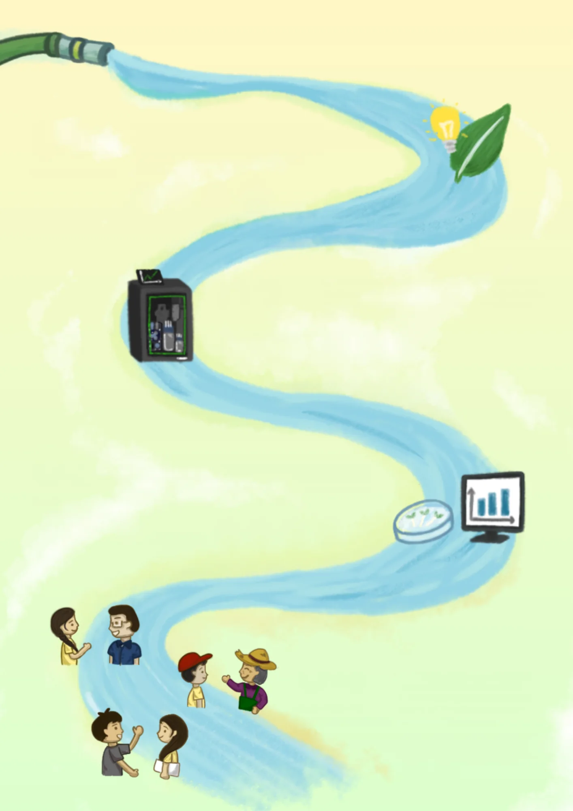
01
Idea formation
March to April
We began by defining the biological problem and testing our original concept. Feedback from experts helped us narrow our focus from a broad PGPR system targeting multiple stresses to a more controlled and testable biological concept towards plants.
We changed the biological concept into a practical bioreactor system with the implementation of physical containment and membrane-based delivery. Additionally, we also gained insights to consider environmental safety, sustainability, and farmers’ needs. They also led to our awareness of biological stresses.
With the overall system design structured, we focused on refining its individual components. We started to interview experts for feedback that led to improvements to the bioreactor, protectant validation, dosage and delivery, and plant testing conditions. We also adjusted our experimental design to make our results more accurate and precise.
In the final stage, we connected our development to real-world application. We focused on system reliability, farmer usability, regulation, and whether our experiments clearly demonstrated our proposed mechanism. We collected feedback from agricultural forums and experts, which makes ReLeaf a more practical solution to farmers.
Beyond all of the experiments and validation of our project in itself, we also need to have a way to connect to the real world and make our product come to life, not just be a machine and a concept in the lab. Human Practices and Deployment does this for the project, allowing the team to learn more about how products like ours would do on the market, and what the general consensus surrounding it is so that our project can become closer to what farmers actually need.
The project started as a desire to help struggling farmers experiencing heat stress all over the world, and more specifically Ghana. The organisation that was part of the inspiration for this whole project was USE-GH, who Mr. Nkpeniyeng happens to be the leader of, so we contacted him in hopes of verifying the problems we believed were happening.
Gilbert Nkpeniyeng
1 FebruaryDeployment
Gilbert is currently studying at the University of Cambridge in Development Studies.
Event summary
During our meeting with Gilbert, we interviewed him with questions on Ghanaian farming practices, which allowed us to better understand the smallholder farmers’ needs and the market.
Impact and adaptation
Through this meeting, we understood the challenges the smallholder farmers are facing and how limited access to resources is affecting them. He also explained the Ghana market, which helped us further develop our business plan.
After
adapted a social enterprise business model
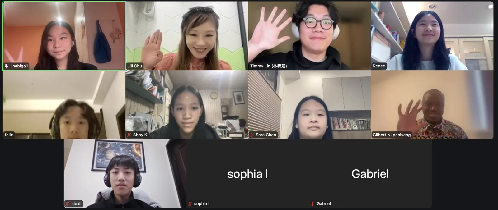
Once the project proposal was accepted, we wanted to gain more advice onto how to actually run a business and what the market is like in Taiwan, which led us to Professor Chen, who runs a smart agriculture business like we plan to, and has a similar sensor system.
Prof. Chen, Wen-Liang 陳文亮
10 AprilDeploymentGene circuit and cloningBioreactor and hardware
Our team met with Professor Chen Wen-Liang from the Department of Biological Science and Technology at National Yang Ming Chiao Tung University (NYCU). He is also the founder of AgriTalk, an AI-driven agricultural technology startup. His expertise in synthetic biology and smart farming helps us understand how biological solutions can be used in real-world applications.
Design the hardware as the printer and the biofertilizer as the ink
Event summary
In April, the meeting with Prof. Chen, also known as the founder of Agritalk, provided us with feedback that shaped the direction of both our hardware development and business plan, which allowed us to gain more understanding of the strategy for setting up a business plan and advised and suggested us on the hardware design.
Impact and adaptation
For the business plan strategy, he suggested that we should not only focus on the local market, but also expand it globally, as the limited scale of the local market may limit our potential revenue. He highlighted some challenges that we need to address, including farmers’ adoption, competition with chemical fertilizers, limited market, and regulations. For the hardware design, he advised us to define a clear input-output mapping and move toward a bioreactor-based system instead of soil release.
Before
Focused on Bacillus subtilis through the process of PGPR to detect plant stress and produce stress-priming protectants
After
Shifted toward a controlled bioreactor-based system that detects stress signals and activates B. subtilis to produce protectants.
Define clear input-output relationships and strengthen our dry-lab modeling and calibration strategy.
Conduct a competitive analysis to identify existing products and key competitors that are related to us
Treat physical containment as the primary biosafety mechanism
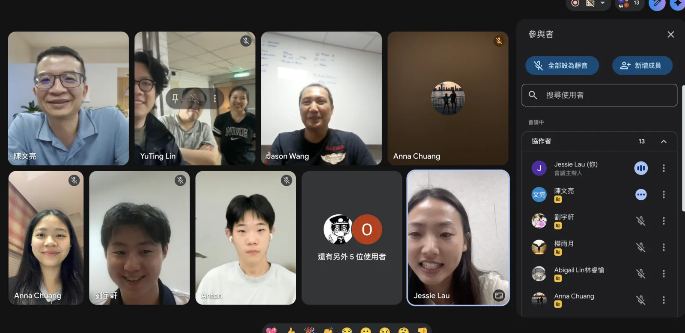
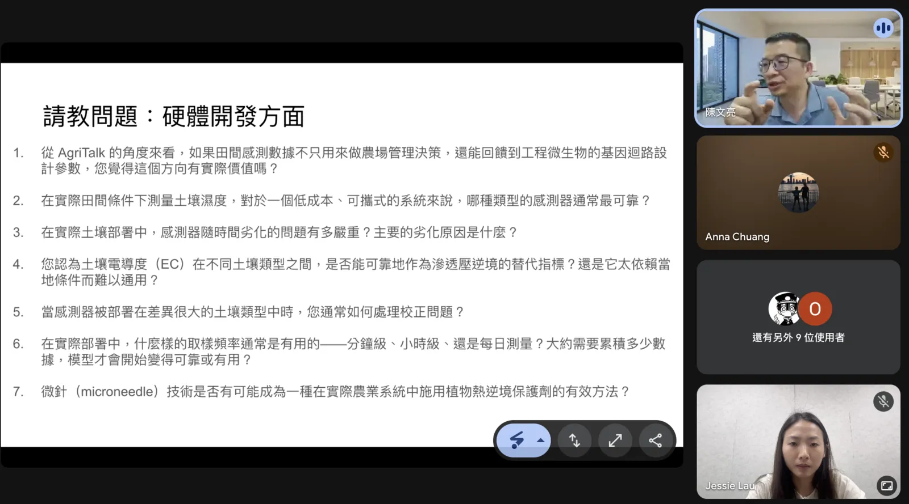
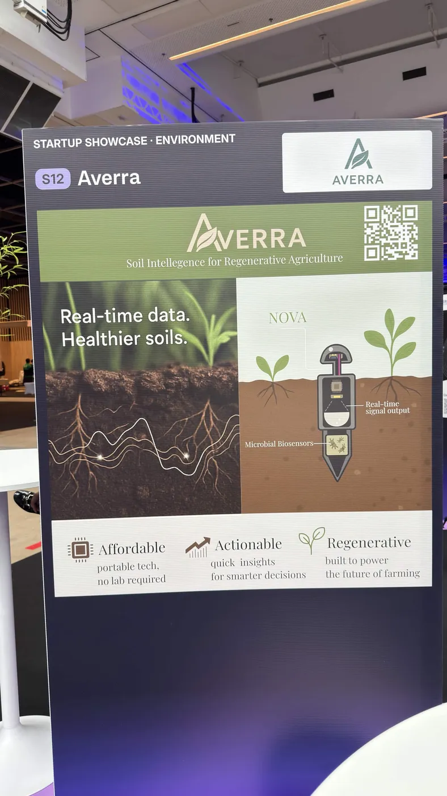
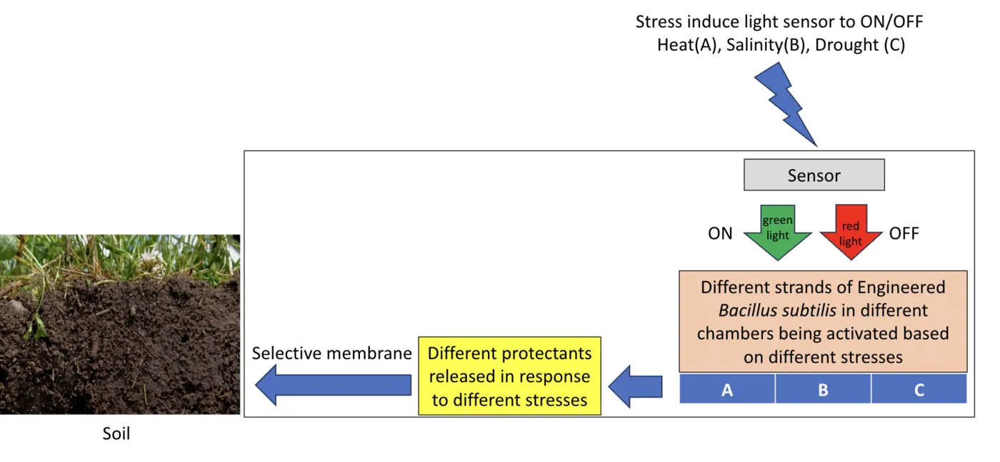
After gleaning more understanding what it’s like to run a business in Taiwan, we realized that we also had to choose a target demographic- and believed it would be organic farmers. But after having conversations with actual organic farmers at a farmers’ market, we learned that it might not be the case- therefore, we contacted World. Veg who works with a lot of small farmers to ask whether or not organic farmers should be the way to go.
World Vegetable Center
22 MayDeployment
The World Vegetable Center is an international non-profit research-for-development organization which is headquartered in Taiwan. It is a global institution solely dedicated to vegetable research and development. The World Vegetable Center aims to deliver science-based solutions across low- and middle-income countries.
Event summary
Through our meeting with the World Vegetable Center, we gained a better understanding of the challenges faced by smallholder farmers, including climate resilience and the effect of biotic and abiotic stresses on farming.
Impact and adaptation
After the meeting, we realized that we needed to demonstrate that our product is environmentally safe, beneficial, and sustainable, as these factors may increase our product’s acceptance among traditional and natural farmers. In addition, we might need to do more regulatory research on the use of GMOs in order to prove it won’t harm the environment.
After
focus more on a sustainable farming label, and to stay on the path of heat stress, because other stresses aren’t as easily combatted. If we want to deal with pathogens, then it would also be best if we try to sense root pressure instead.
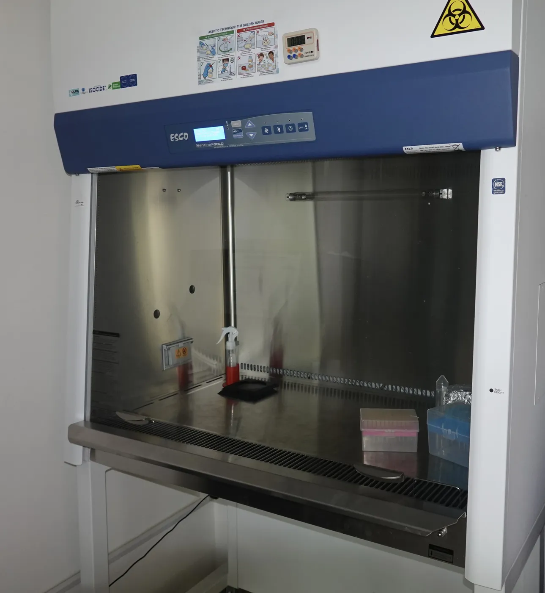
Prof. Chen, Wen-Liang 陳文亮
20 JuneDeploymentBioreactor and hardwareModelling
Event summary
During Prof. Chen’s visit, he provided feedback on different aspects, including the math model, plant model, protectant, hydroponics, gene circuit, and bioreactor. He highlighted the importance of connecting the experimental data with modeling, identifying the inputs and outputs clearly, and ensuring every model is refined through experimental validation and feedback loops.
Impact and adaptation
This meeting shows us that we need a better feedback loop for the experiment, hardware, and model, so we can ensure that our experimental results can continuously refine the model. He suggested that we should consider the ReLeaf database as a platform for organizing experimental data and supporting future optimization and agricultural applications. Additionally, Prof. Chen also mentioned that we can potentially visit Yes Health iFarm for gaining a better understanding on hydroponics.
Before
Using a self-producing bioreactor to release protein while preventing bacterial leakage
Developed the mathematical model and experimental system as relatively separate components
Planned to evaluate plant responses under a limited set of experimental conditions
Focused on whether the bioreactor could produce the target protectant
After
Establish a feedback loop between mathematical modeling and wet-lab experiments
Consider real-world agricultural applications, including biosafety, environmental factors, and practical deployment.
For the plant model, test different salt concentrations and treatment durations to determine the relationship between dosage, treatment time, and plant response
Expand the bioreactor testing period to collect sufficient data for model validation
Monitor dissolved oxygen and other hydroponic conditions to maintain stable plant growth during experiments
Explore real-world agricultural applications through a potential field visit to Yes Health iFarm, particularly to better understand hydroponic deployment
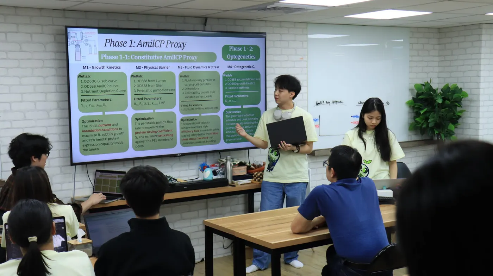
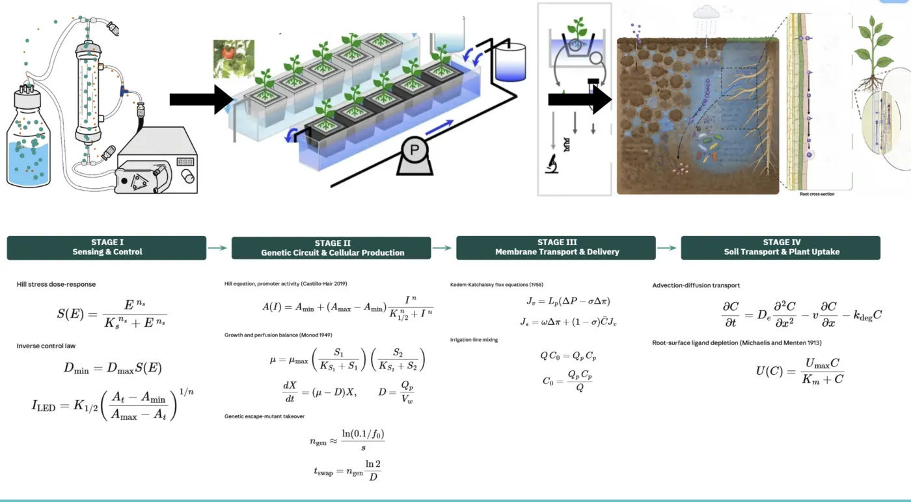
After the second meeting professor Chen, we wanted to ask even more businesses about what regulations and the real-life market is like, along with a need to learn more about what real-world bioprotectants are like, leading to our visit to CH Biotech
CH Biotech 正瀚生技
9 JulyDeploymentPlant and stress biologyProtectant design
CH Biotech is a world-class company that specializes in agricultural biotechnological products and aims to keep R&D at the forefront of the world. At CH Biotech they regulate plant genes with environment-friendly active ingredients to improve crop yields and quality. With their help, we tried to better understand the current development, testing, delivery, and commercialization protectants.
Different crops and protectants require different application methods
Event summary
We consulted with CH Biotech, a company specializing in biostimulants, to better understand the current development, testing, delivery, and commercialization protectants. They encouraged us to consider differences between crops and protectants when selecting delivery methods, as well as regulatory requirements, production costs, AI system design, and the transition from laboratory to agricultural applications.
Impact and adaptation
The experts from CH Biotech suggested us to show evidence that proves the system improves plant performance under heat or drought stress and evaluate efficacy using multiple phenotypic and physiological measurements. They also suggested we expand the AI direction by considering additional factors for prediction. More importantly, we should research and confirm the regulation in Taiwan before taking further actions.
Before
Focused broadly on developing a bioreactor capable of producing and delivering plant protectants under different stress conditions
After
Research into biostimulant and farming equipment
Compare testing of protectant distribution methods
root irrigation
foliar spray
drone spray
Consider production cost per area covered
Look into AI as a diverse tool for protectant testing and design
Apply computational screening to optimize protectant
Protective motifs and truncated peptide + mutation
Research on regulation
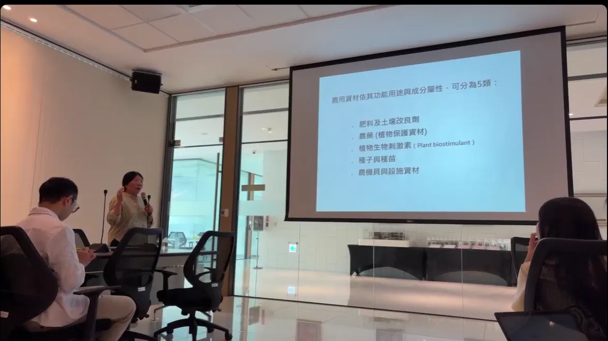
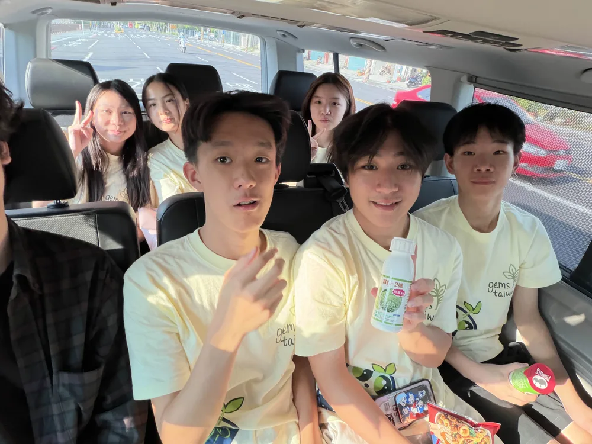
We had already been planning to visit this exhibition because it was about producing bio-products, which we felt was very close to what we intended to do. The second meeting with professor Chen and visit to CH-Biotech only further confirmed this decision, as we realised that we still have a lot more to learn about regulations.
BIO Asia-Taiwan Exhibition 2026
18 JulyDeploymentProtectant designBioreactor and hardware
Bio Asia-Taiwan Exhibition 2026 is a public biotechnology exhibition held in Nangang, Taipei, Taiwan. ReLeaf attended the event in order to explore novel biotechnology innovations and gain feedback on our product. Through this event, we gained insight on plant stress tolerance and the necessities for B. subtilis survival.
Event summary
In the BIO Asia-Taiwan Exhibition, we engaged with different companies, experts, and researchers, gaining many insights from different aspects. One of our most valuable takeaways is that plant stress tolerance depends not only on the presence of protective molecules, such as proline, but also on the processes that regulate their production and use. We also learned that dissolved oxygen monitoring and active aeration/stirring are essential for B. subtilis survival and protein/protectant output, not just passive containment.
Impact and adaptation
After hearing different advice from different booths, we realized that we should prioritize an O₂ sensor and feedback loop in our design. For wetlab, we can investigate irrigation-system-integrated delivery as an alternative to a standalone device and move at least some validation experiments from agar/hydroponics to soil-based trials, and increase sample size.
For business plans, we should also research the GMO regulatory landscape in Taiwan and other countries, including the Philippines, Malaysia, and EU.
Before
Self-producing where AI senses stress and triggers protective release.
On-site production avoids shelf life and transportation cost.
An electronic sensor senses abiotic or biotic stress, goes into the microcontroller, sets off the green life, and then protectant is produced.
Application method includes delivering the protectant to the soil through pipeline and spraying on the leaves through the irrigation system.
Farmers only need to buy the bioreactor machine and replace the B. Subtilis powder or liquid once a year.
Protectant candidates include ACCD, LEA14, and BoPep4.
After
Utilizing agricultural waste through methods such as hay infusion for the business plan.
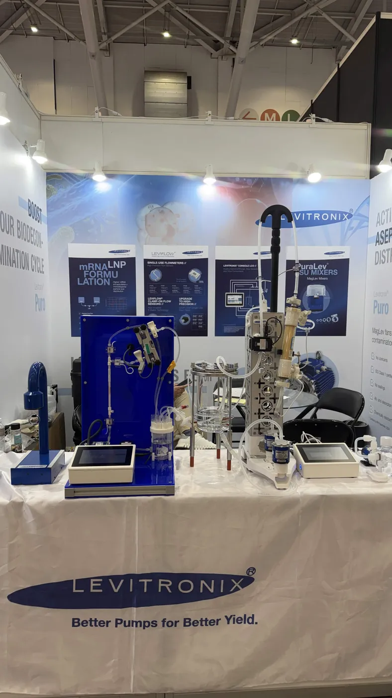
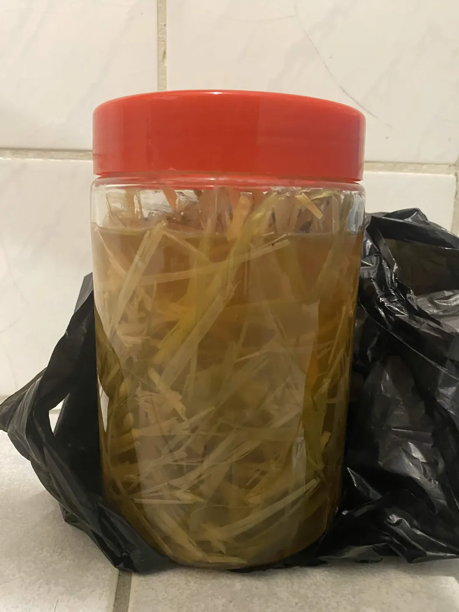
From the BIO Asia-Taiwan visit, we happened to learn more about regulations beyond Taiwan, which influenced our decision to expand into Southeast Asia. Hearing about those regulations in place and policies, added onto many previous interviewees mentioning that we should look deeper into regulations and the policies/market surrounding smart farming and GMOs in the agricultural sector, led us to contact Prof. Chang, who is an expert in exactly that. It can be said that it’s really been a long time coming.
張
Prof. Chang, Hung-Hao 張弘浩
31 AugustDeployment
Professor Chang Hong-Hao is part of the Department of Agricultural Economics and through his expertise we asked for his evaluation of market feasibility and commercialization of our business plan.
Event summary
We consulted Prof. Chang, who is an expert in agricultural economics and policy from NTU, to evaluate the market feasibility and commercialization of our business plan. He gave an overall feedback on our business plan, specifically, the regulatory classification, biosafety and containment, adoption barriers, and practical models such as equipment rental, subscription, and collaboration with agricultural organizations.
Impact and adaptation
In his reply, we learned that we should demonstrate a measurable reduction in crop yield losses and or improvement. He also mentioned the importance of addressing containment, regulation, organic farming requirement, costs, and specific applications before commercialization.
After
Narrow the initial application to a specific stress and crop
Do more research on the regulations
After this meeting, we realized we needed to actually talk with companies who are even more similar product-wise to us to understand what they had to go through to get their product on the market, and to learn from that so we can be better prepared to face such challenges, as only similar companies to ours can truly provide the most realistic advice. We then learned that smart agriweek not only had such companies, but they also had participants from the ministry of agriculture, which is the government body that we need contact with in order to validate whether or not our project can realistically get approved.
Taiwan SMART Agriweek 2026
9 SeptemberDeployment
By visiting the Taiwan SMART Agriweek 2026, we gained more insight on the demographic of the people interested in our product. After our visit, we noticed that people interested in our product were mostly young farmers.
Event summary
By visiting the Smart Agriweek Exhibition, we learned that the main demographic that will be interested in our product is young farmers, but it also means that we need to find ways to convince older farmers to also adopt our product. Moreover, regulations will definitely be hard for us as a product that uses GMOs. Additionally, we now know that we have a pricing and value advantage, as our product counts as many products in one for a much lower price than it would take for a farmer to, for example, buy both BioBar and Agriweather’s products. Talking with them also allowed us to receive confirmation that government sectors are willing to help and subsidise products that are like ours if necessary.
Plant and stress biology
Our engagement with experts in plant and stress biology helped us refine our project into a more well-developed system. Through the discussions on plant models, stress conditions, natural plant responses, and experimental systems, we continuously identified the limitations and adapted our system based on the feedback from different experts.
Professor Lin Wei-Yi is part of the department of agronomy at National Taiwan University. Her expertise lies in crop production and crop genetic engineering. Through our interview we gained valuable insight on real-world applicability.
Assess the real-world applicability and value of the system, research more suitable plants for our project.
Event summary
During our interview with Dr. Lin, we gained valuable insights on Medicago truncatula, PGPR, planting, plant stress, biosecurity, and sought some feedback on our current idea.
Impact and adaptation
Most valuable takeaway:
Evaluate the real impact of PGPR on germination speed and early growth. For short-term growth conditions, we should observe germination speed, compare differences between with and without PGPR treatment, and analyze the effects of different treatments (different bacteria or conditions).
To simulate stress, we should only add water every few days for salinity, and add some other particles that are larger than water and block the water from getting into the plant for drought.
Before
Design a kill switch to avoid cells living outside the incubator
Focusing on Medicago as our target plant
After
Consider not doing a kill switch
Consider changing the target plant
Consider hydroponics
Shifted focus to seedling-stage testing
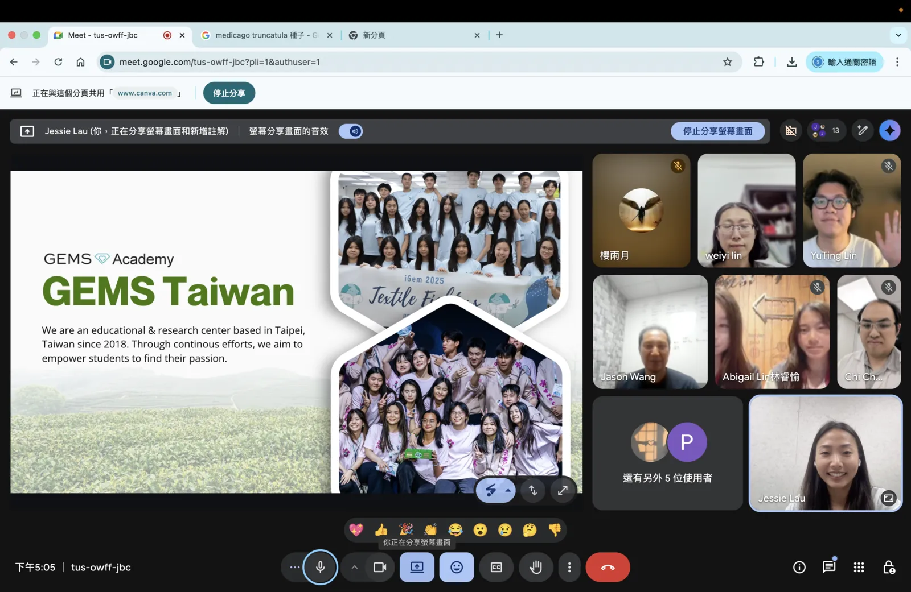
After the interview with Dr. Lin, we received many ideas and suggestions on the choice of plant and evaluating the impact of the PGPR system. However, during this time, we still haven’t had a target plant that we decided to focus on to develop the system.
Prof. Cheng, Mei-Chun 鄭梅君
27 MarchPlant and stress biology
Cheng Mei-Chun is an assistant professor at the National Taiwan University. There, she works in the department of Biochemical Science and Technology where she specializes in Plant biology; helping us establish a plant model.
Consider shifting the plant model to Arabidopsis thaliana. Prioritize agar plate growth for early-stage control, followed by transferring to soil.
Event summary
Throughout the meeting with Prof. Cheng, we introduced our proposed engineered Bacillus subtilis system for detecting plant and environmental stress by producing protective outputs such as trehalose or ACC deaminase. She agreed with our ideas of choosing abiotic stresses such as heat, salinity, and drought, and choosing Arabidopsis as a suitable model for controlled experiments. Additionally, she noted that hydroponics might not be stable for our testing and suggested that we should not rely solely on it. Her expertise provided valuable guidance and helped shape and refine the direction of our project.
Impact and adaptation
Her feedback made us realize that experimental procedures themselves can interfere with plant stress responses. More importantly, the feedback led us to a shift toward more realistic and controllable plant-growth conditions. She suggested that the project should prioritize agar plate growth for early-stage control, followed by careful transfer to soil. We should carefully manage environmental transitions and stress timing, and use visual ROS staining to improve stress assessment. We also decided to remove osmotic stress from our targeted stresses. Additionally, Prof. Cheng kindly provided us with Arabidopsis seeds and shared valuable guidance on their cultivation and optimal growing conditions.
Before
Considered heat, salinity, drought, and osmotic stresses as our stress targets
Rely on hydroponics for proof-of-concept
After
Use moderate stress conditions to prevent killing plants
Avoid hydroponics as the main experimental system
Move toward a plate to soil transition model instead of purely controlled systems.
Focus more on detectable phenotypic and biochemical outputs rather than only gene-level responses.
Potentially reconsider how the engineered Bacillus subtilis interacts with plants in realistic environments (soil vs liquid).
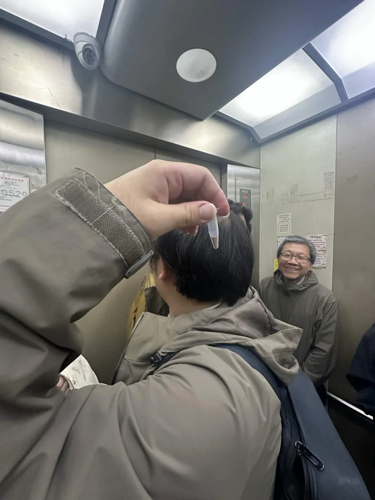
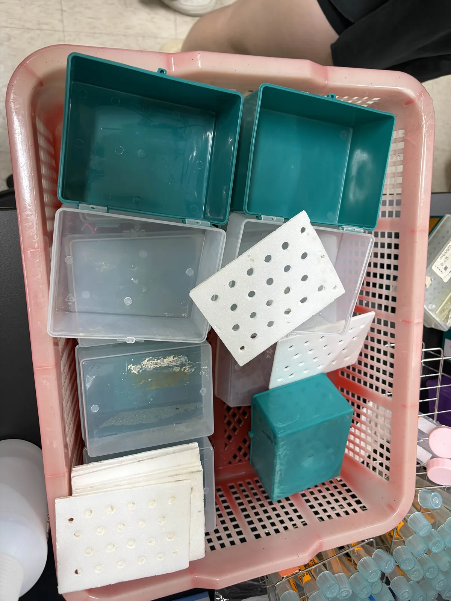
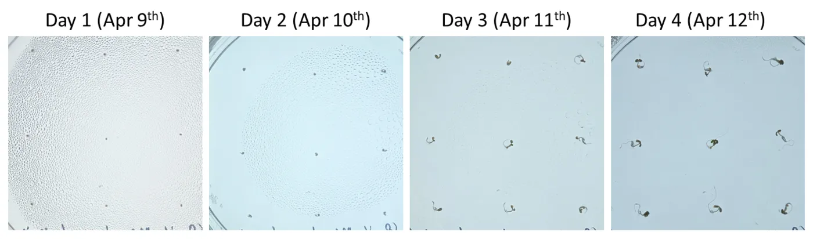
Before the visit to Prof. Cheng’s lab, we researched different plants for the potential target plant based on Dr. Lin’s recommendations. During our interview with Prof. Cheng, she provided very valuable takeaways and insights on hydroponics and plant model systems. Her recommendation of Arabidopsis and plate-to-soil system allowed us to move forward and start designing controlled stress experiments. After confirming our target plant, we then had questions about the protectants.
Dr. Paul Verslues
3 AprilPlant and stress biologyProtectant design
Dr. Paul Verslues is part of Academia Sinica and specializes in drought stress, arabidopsis research, and plant stress signaling. His expertise in plant stress helped us change our project direction from stress protection to stress detection. He consulted us on the mechanisms of drought and the proline delivery system.
Work with the plant’s natural response rather than simply supplying more proline
Event summary
During our meeting with Dr. Verslues, we gained valuable insights into the bacterial aspects of our project. More specifically, he consulted us on the mechanisms of drought and the proline delivery system.
Impact and adaptation
After the meeting, we had a very meaningful takeaway on the idea of optimizing proline dosage and investigating whether bacterial products affect the plant’s natural proline-redox cycle. He also inspired us to consider testing stress priming approaches and measuring indicators such as root growth and biomass. Additionally, he mentioned that we should adjust our system to prioritize early stress detection rather than stress recovery.
Before
Engineered Bacillus subtilis (PGPR) detects environmental stresses (drought, salinity, heat, and osmotic stress) and responds by producing plant-protective compounds such as trehalose and ACC deaminase.
Signal molecules (e.g., naringenin and salicylic acid) activate survival genes, improving the bacteria’s ability to persist and function under stressful conditions.
The system enhances plant stress tolerance without genetically modifying the crop, using engineered beneficial bacteria to support plant growth and resilience.
After
Explore a shift from a proline-delivery system toward a plant-regulation system, using bacterial signals or precursors to enhance the plant’s natural drought response
Consider testing stress priming approaches and measuring indicators such as root growth and biomass
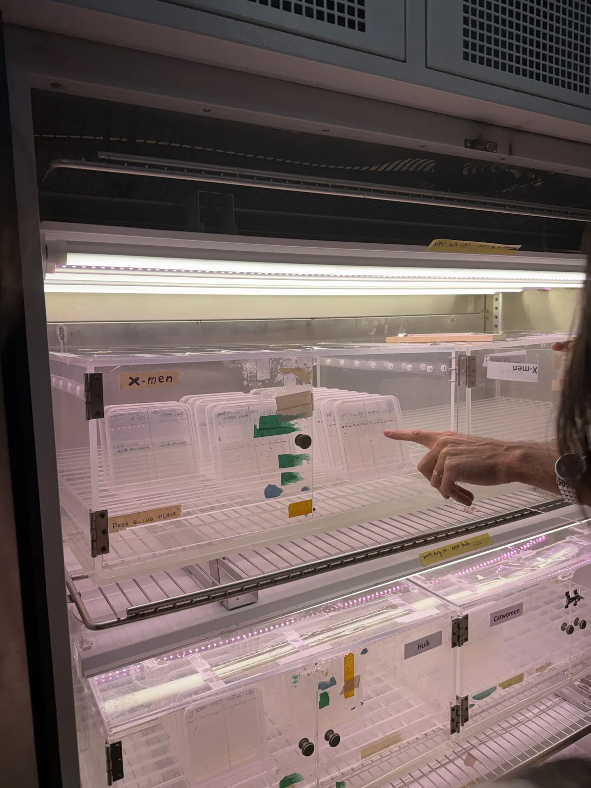
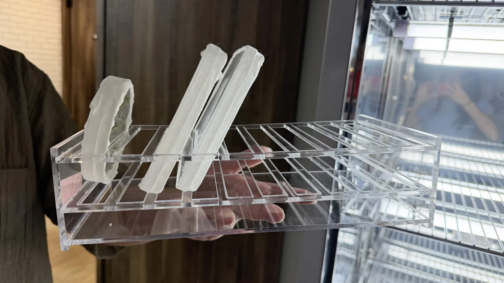
After establishing our plant model, we still need to determine how our protectants should interact with the plant’s natural stress-response mechanisms. Dr. Verslues shifted our direction from simply delivering more protective compounds to regulating the plant’s natural response. He also encouraged us to explore stress priming and measure outcomes such as root growth.
CH Biotech 正瀚生技
9 JulyDeploymentPlant and stress biologyProtectant design
CH Biotech is a world-class company that specializes in agricultural biotechnological products and aims to keep R&D at the forefront of the world. At CH Biotech they regulate plant genes with environment-friendly active ingredients to improve crop yields and quality. With their help, we tried to better understand the current development, testing, delivery, and commercialization protectants.
Different crops and protectants require different application methods
Event summary
We consulted with CH Biotech, a company specializing in biostimulants, to better understand the current development, testing, delivery, and commercialization protectants. They encouraged us to consider differences between crops and protectants when selecting delivery methods, as well as regulatory requirements, production costs, AI system design, and the transition from laboratory to agricultural applications.
Impact and adaptation
The experts from CH Biotech suggested us to show evidence that proves the system improves plant performance under heat or drought stress and evaluate efficacy using multiple phenotypic and physiological measurements. They also suggested we expand the AI direction by considering additional factors for prediction. More importantly, we should research and confirm the regulation in Taiwan before taking further actions.
Before
Focused broadly on developing a bioreactor capable of producing and delivering plant protectants under different stress conditions
After
Research into biostimulant and farming equipment
Compare testing of protectant distribution methods
root irrigation
foliar spray
drone spray
Consider production cost per area covered
Look into AI as a diverse tool for protectant testing and design
Apply computational screening to optimize protectant
Protective motifs and truncated peptide + mutation
Research on regulation
We had developed a biological concept, however, we hadn’t addressed the feasibility of this system being delivered and applied in agriculture. Therefore, we visited CH Biotech to gain an industry perspective on protectant efficacy, delivery, production cost, commercialization, and regulation.
Prof. Huang, Chieh-Chen 黃介辰
28 JulyPlant and stress biologyGene circuit and cloning
Professor Huang Jie-Chen is currently working in the Department of Life Sciences at the National Chung Hsing University. He specializes in Synthetic biology, Microbial carbon fixation development, Plant endophytes, Environmental biotechnology, Bioenergy technology, Microbiology.
Event summary
We consulted with Prof. Huang to evaluate the timing, dosage, sensing strategy, and application of our protectant-delivery system. During the discussion, he highlighted that biostimulants can be most effective when applied during the seedling stage to have effects that last longer, which also helps adjust gene regulation signals as cells replicate for long-term protection. Prof. Huang also mentioned that excessive stress or protectant concentrations may affect plant health negatively, so it is important to set appropriate thresholds and validate dosages. From an agricultural angle, hydroponic systems may not completely simulate field conditions, and farmers often prioritize simple application. Therefore, our system should integrate functions such as environmental sensing and weather forecasting to predict stress while keeping it easy for farmers to operate.
Impact and adaptation
This meeting changed our understanding of when and how our bioreactor should respond to stress. We also learned that different protectants may require different amounts of time, some can prime plants before stress, and others may be more effective when stress occurs. This led us to consider periodic rather than continuous operation and seedling-stage application as alternative strategies.
After
Combine sensors (pH value, moisture) with weather forecasting and AI to predict stress and release protectants early.
Set the bioreactor to clear free radicals periodically when stress hits, rather than running continuously.
Test application methods on soil (letting soil dry slightly so it absorbs better) and carefully test concentrations to prevent plant toxicity.
Use dense cell pellets and DNA (>10k) for electroporation, troubleshoot ligation, and verify the green reporter gene in B. sub.
Include both vector control and no-plasmid control groups to check for native resistance. Use an increasingly nutrient-poor medium as a backup method.
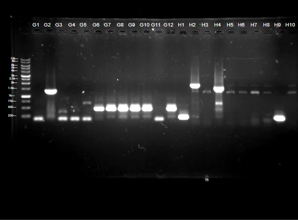
Prof. Huang, Chieh-Chen 黃介辰
6 AugustPlant and stress biologyGene circuit and cloning
Event summary
After the last meeting with Prof. Huang, we visited him at NCHU in person to gain some feedback on our project direction. For wetlab, the discussion focused on improving protein expression and secretion. For the plant model, he advised establishing a clear experimental rationale for salinity and heat stress across agar, hydroponic, and soil systems. For drylab, the focus shifted toward designing shorter or modified peptide constructs while retaining biological activity, and using receptor–peptide interactions to guide construct selection.
Impact and adaptation
The consultation helped us improve our understanding of protein and plant models. We recognized that only improving secretion is insufficient if the resulting protein does not retain its activity, so protein quantity, identity, solubility, and function need to be evaluated together.
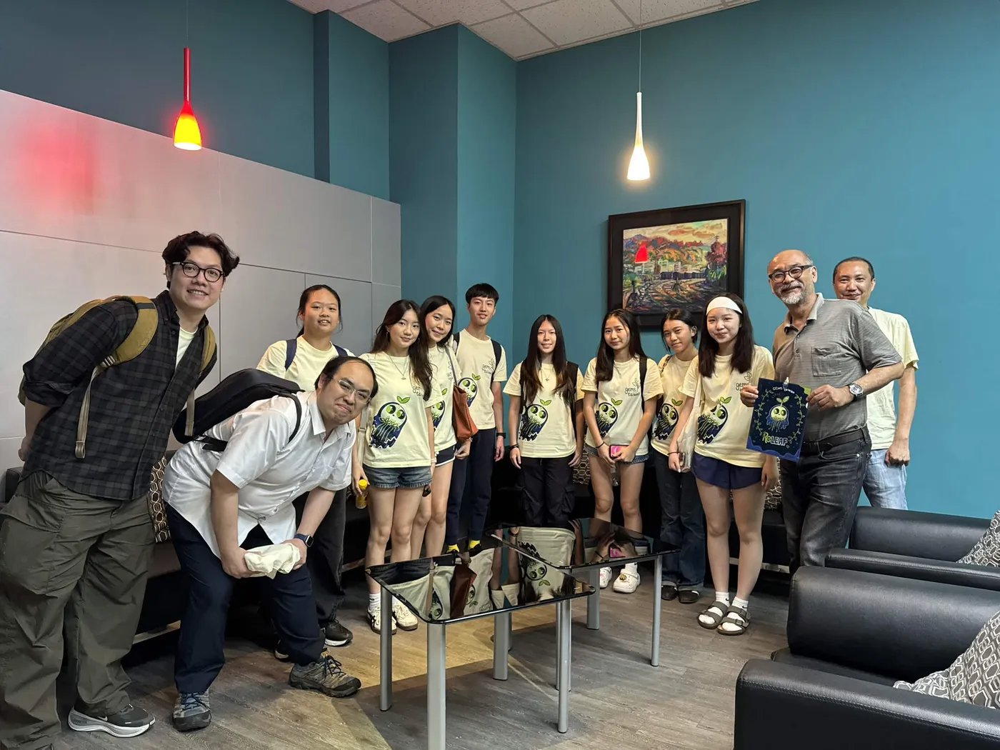
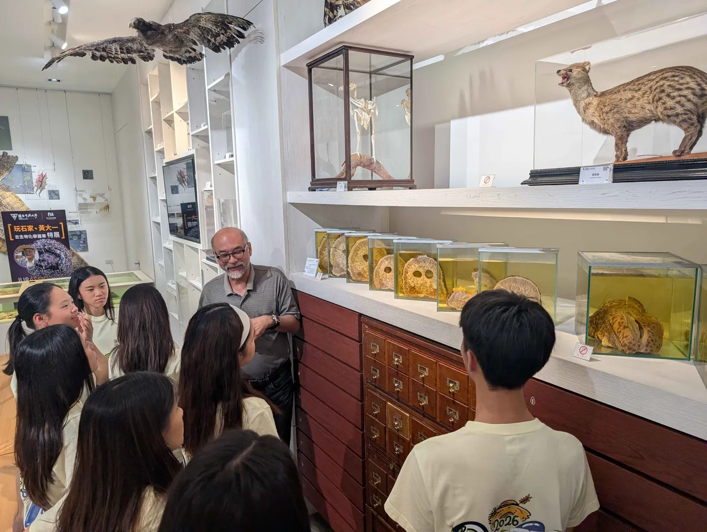
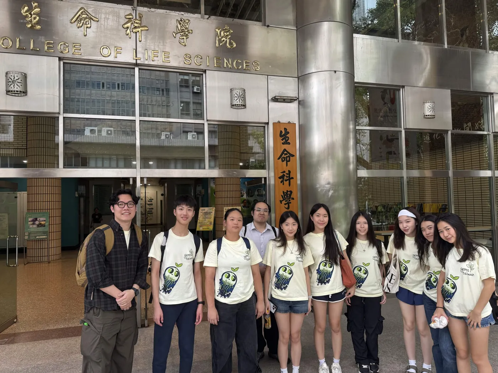
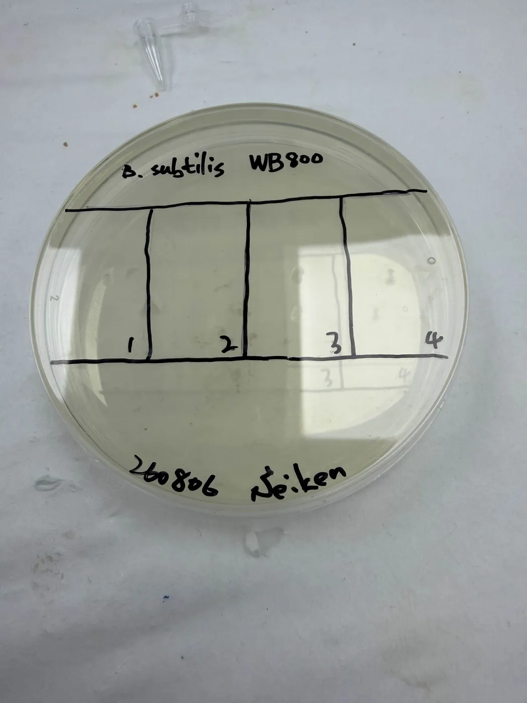
Even after considering application methods, we still need to determine when and how much protectant should be delivered. During the interview with Prof. Huang, we asked questions to refine the biological timing, dosage, and sensing strategy. After the meeting, his insights helped us shift toward a more adaptive system that considers seedling stage, stress prediction, dosage thresholds, and periodic rather than continuous operation.
Prof. Huang, Tzu-Pi 黃姿碧
6 AugustPlant and stress biologyProtectant designGene circuit and cloning
Professor Huang Tzu-Bi is currently working in the Department of Plant Pathology at the National Chung Hsing University. She specializes in Microbial biofilm, Microbial cell signaling, Biological control, Pesticide science.
Event summary
On August 6, we also visited Prof. Huang, who is also from NCHU, to evaluate our B. sub engineering strategy, protectant delivery methods, plant testing systems, and potential agricultural applications. We discussed optimizing bacterial production, determining protectant concentration and application timing, and selecting suitable delivery methods such as irrigation, spraying, and seed coating. Since our bacteria will be contained in the bioreactor, effective protectant delivery is important for plant responses.
Impact and adaptation
This interview helped us better understand that our system effectiveness doesn’t only depend on whether B. sub produces protectants, but also on how much protectant reaches the plant, when it is delivered, and how frequently it is applied. We also learned that optimizing the culture medium may help reduce metabolic trade-offs while supporting bacterial growth and protein production.
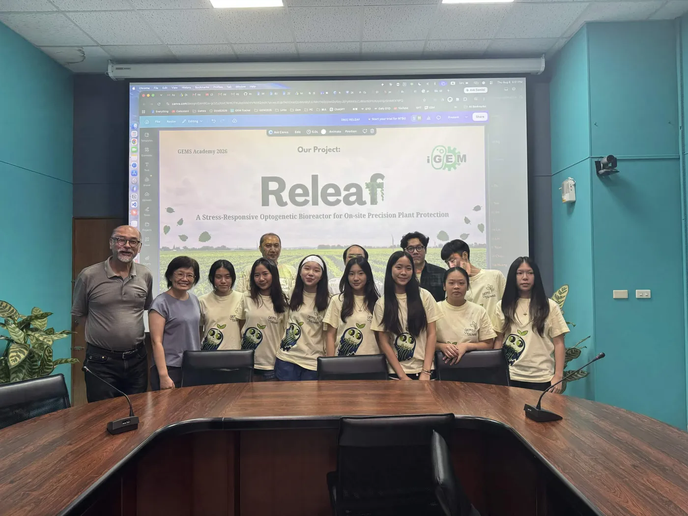
On the same day we interviewed Prof. Huang, we also interviewed Prof. Huang Tzu Bi, who explained to us how we can connect bacterial production, protein function, plant models, and delivery into one system. From this interview, we learned that we need to evaluate quantity, identity, solubility, and biological activity together.
Yes Health iFarm 源鮮智慧農場
11 AugustDeploymentPlant and stress biologyBioreactor and hardware
Yes Health iFarm grow leafy vegetables, herbs, and microgreens indoors using stacked vertical hydroponic systems. So, based on their expertise, we received valuable insights on how a highly controlled hydroponic system manages plant growth.
Event summary
The visit to Yes Health iFarm helped us understand how a highly controlled hydroponic system manages plant growth through environmental monitoring, nutrient management, lighting, aeration, and water circulation. Although we were unable to obtain some of the exact technical data we needed, the discussion provided important design insights for ReLeaf.
Impact and adaptation
After consulting with the expert from Yes Health iFarm, we gained some valuable insights. The discussion led us to reconsider our experimental conditions, improve the integration of environmental sensors, and design ReLeaf to be adaptable to different crops and growing environments.
After
We may expand ReLeaf from simply detecting environmental stress to eventually detecting nutrient deficiencies and automatically supplying the nutrients plants need.
We also want to shift our project philosophy toward treating plants more like living organisms with individual needs, rather than focusing purely on maximizing economic output.
This could create a stronger connection between plant health, food quality, sustainability, and farmer needs.
Reconsider our current 8/16 light cycle and investigate whether a 12/12 cycle would produce more natural and reliable growth conditions.
Incorporate DO, and possibly OD into our system parameter planning.
Further investigate how sensor data can distinguish between different types of plant stress.
Modify our growth chamber to provide continuous circulation and gentle aeration rather than relying on pure oxygen.
Minimize plant transfers during experiments because transplantation itself can induce stress.
Consider plant-specific nutrient concentrations.
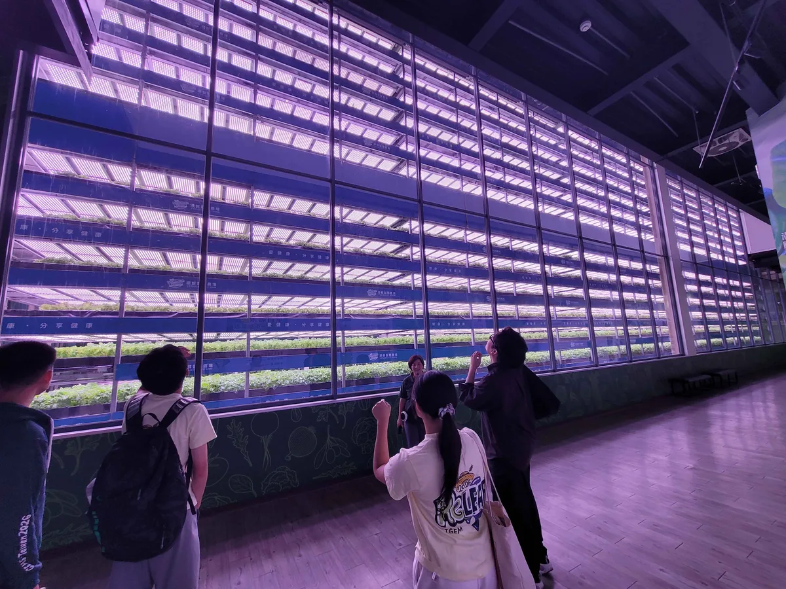
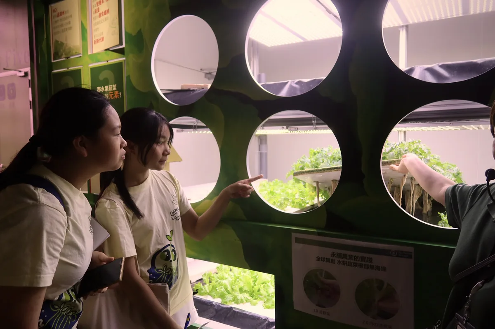
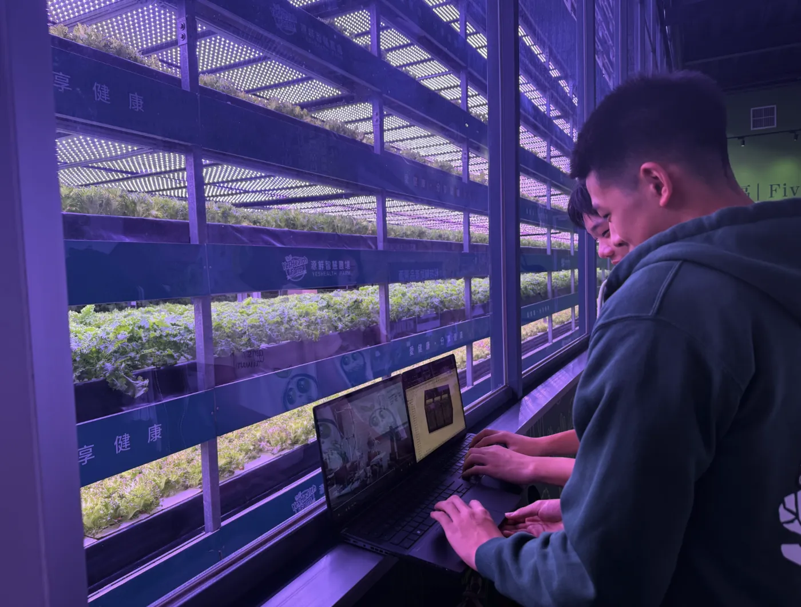
Although our experiments were becoming more technically controlled, we still need to confirm whether those conditions actually reflected a real agricultural growing environment. From the visit to Yes Health iFarm, they encouraged us to make our system more adaptable to different crops and growing environments, improve environmental sensing, and reconsider whether the system should eventually respond to other plant needs such as nutrient deficiencies.
However, as we incorporated feedback from different experts, we realized that some of our experimental results might have been influenced by unintentional stress.
Prof. Cheng, Mei-Chun 鄭梅君
28 AugustPlant and stress biology
Event summary
During the second visit to Prof. Cheng’s lab, we mainly consulted her on hydroponics containment issues, agar salinity stress treatment protocol, and soil-based salinity stress experiments, optimization of hydroponics plant growth, and discussed our current experimental approaches. We presented our current project progress and design to her, and also demonstrated the modifications we had made in response to her feedback from our first visit.
Impact and adaptation
From Prof. Cheng’s feedback, we learned that experimental conditions can strongly influence plant growth and stress responses, so some of our previous results may have been affected by unintended stress rather than the treatments themselves. She also helped us improve the reliability of our plant functional assays by controlling plant age, environmental conditions, root growth, water exposure, and treatment procedures across agar, soil, and hydroponic systems.
Before
Used inconsistent plant ages and treatment conditions.
After
Standardize plant age, treatment timing, and sample conditions.
Optimize hydroponic conditions and investigate contamination.
Revise soil and agar protocols to reduce unintended plant stress.
Change and adjust the protocol according to the suggestions
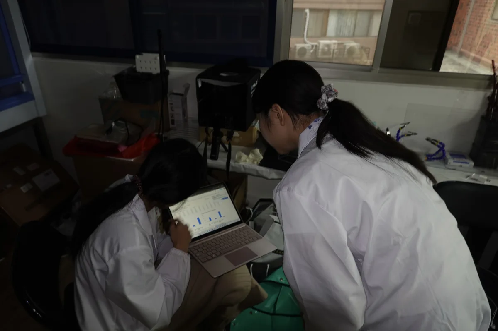
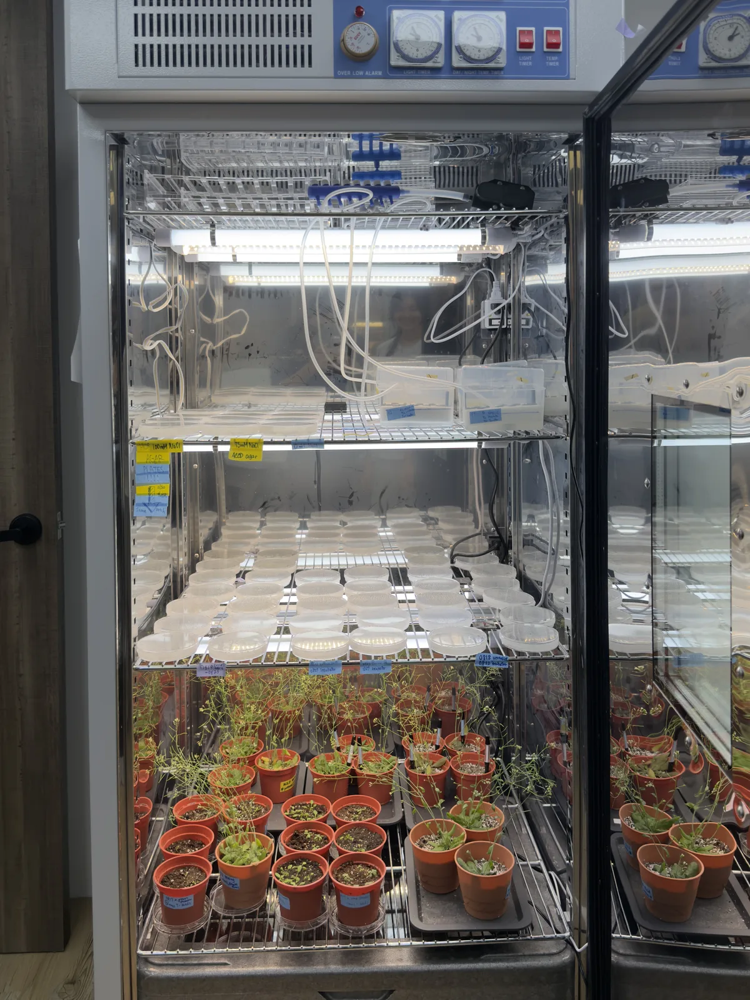
Protectant design
Our Protectant Design pipeline served as the core functional layer of our project, ensuring that our system delivered the types of protectants that were truly helpful to the kind of stress the plants were facing and also actual, measurable stress relief to crops. This pipeline determined which protective molecules we should produce, how they function at a biological level, and how they can be effectively delivered to plants under varying types and levels of stress. By consulting experts across stress biology, biochemistry, and biostimulants, we aligned our selection and testing protocols with real-world application needs, turning our concepts into a practical framework for plant resilience against climate change.
Our project initially relied on engineered Bacillus subtilis to directly produce and release protective compounds like proline and trehalose to aid plants during drought stress. However, we grew concerned that supplying external proline might suppress the plant's natural proline biosynthesis genes (such as P5CS1) or disrupt its internal proline-redox balance, leading us to consult Dr. Verslues at Academia Sinica.
Dr. Paul Verslues
3 AprilPlant and stress biologyProtectant design
Dr. Paul Verslues is part of Academia Sinica and specializes in drought stress, arabidopsis research, and plant stress signaling. His expertise in plant stress helped us change our project direction from stress protection to stress detection. He consulted us on the mechanisms of drought and the proline delivery system.
Work with the plant’s natural response rather than simply supplying more proline
Event summary
During our meeting with Dr. Verslues, we gained valuable insights into the bacterial aspects of our project. More specifically, he consulted us on the mechanisms of drought and the proline delivery system.
Impact and adaptation
After the meeting, we had a very meaningful takeaway on the idea of optimizing proline dosage and investigating whether bacterial products affect the plant’s natural proline-redox cycle. He also inspired us to consider testing stress priming approaches and measuring indicators such as root growth and biomass. Additionally, he mentioned that we should adjust our system to prioritize early stress detection rather than stress recovery.
Before
Engineered Bacillus subtilis (PGPR) detects environmental stresses (drought, salinity, heat, and osmotic stress) and responds by producing plant-protective compounds such as trehalose and ACC deaminase.
Signal molecules (e.g., naringenin and salicylic acid) activate survival genes, improving the bacteria’s ability to persist and function under stressful conditions.
The system enhances plant stress tolerance without genetically modifying the crop, using engineered beneficial bacteria to support plant growth and resilience.
After
Explore a shift from a proline-delivery system toward a plant-regulation system, using bacterial signals or precursors to enhance the plant’s natural drought response
Consider testing stress priming approaches and measuring indicators such as root growth and biomass
During our consultation, Dr. Verslues explained that supplying pure proline directly is inefficient and carries risks of harmful metabolic buildup. He advised us to work with the plant's natural response by shifting to a plant-regulation framework that uses bacterial signals, precursors, or mild stress priming to activate endogenous defense pathways. Following his feedback, we pivoted to an early stress detection approach, testing precursor molecules and focusing our validation on root growth and biomass in soil and agar systems.
When evaluating protectant choices like LEA14, NHP, and BoPep4, we realized our proof-of-concept strategy was too broad by trying to tackle multiple environmental stresses simultaneously without verifying individual molecule performance. We sought out Dr. Sattely to review our protectant selection, bioavailability, and plant delivery mechanisms.
Dr. Elizabeth Sattely
27 JuneProtectant design
Dr. Elizabeth Sattely is an Associate Professor of Chemical Engineering at Stanford University. Dr. Sattely specializes in biological chemistry and molecular pharmacology. With her expertise, she gave us validation for our protectant selection before we integrated it into the full system.
Validation of the protectant itself before integrating it into the full system
Event summary
We consulted with Dr.Sattely to evaluate our protectant selection, delivery strategy, and overall project direction. She also emphasized that we should outline more clearly the goals, intentions, and milestones for our project so that it can be more organized, which helped us remember and more deeply consider the focuses and aims of our project.
Impact and adaptation
She pointed out that our current proof of concept might not be very successful and emphasized the need to clearly define the goals of our project and explain why the proposed solution is important. She suggested we only focus on one type of stress and do it very well instead of surface level for many different stresses and also advised us to explore other types of molecules such as peptides for our project.
Before
Focused on integrating protectant production into the bioreactor before fully validating the effectiveness of the protectant itself
After
Test the purified protectant directly on plants to demonstrate its effectiveness and strengthen our proof of concept
Define clearer project goals, milestones, and measurable outcomes before further developing the complete system
Use the results of direct plant assays to determine whether a protectant is worth integrating into the engineered B. subtilis bioreactor
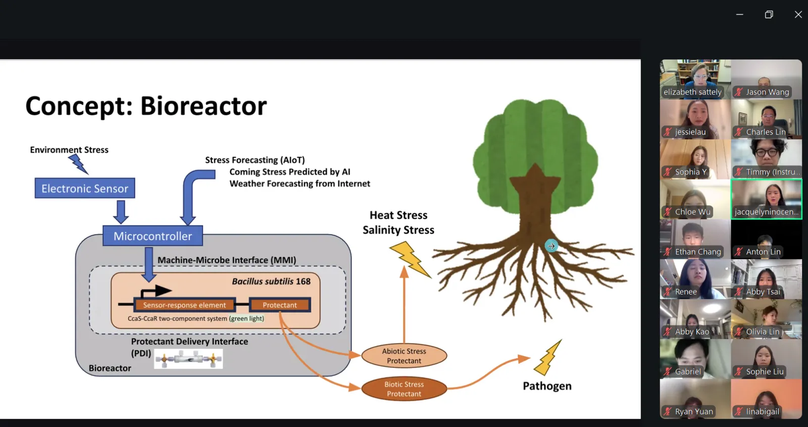
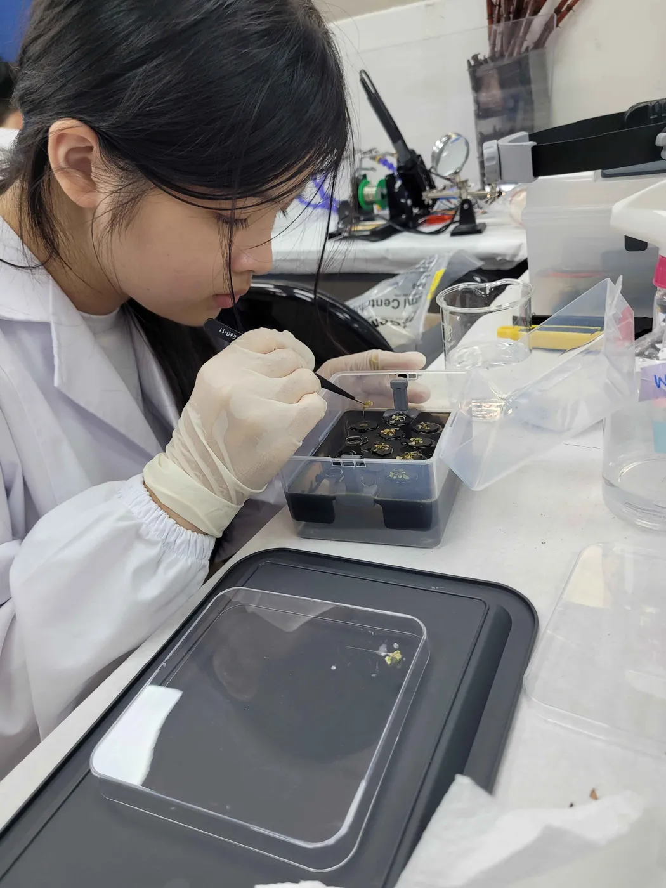
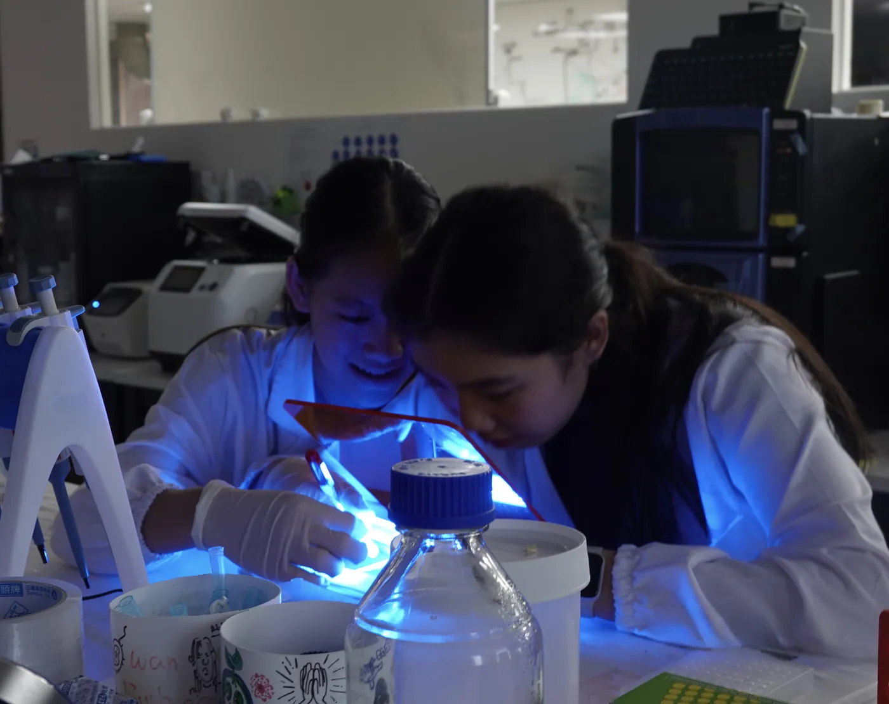
During our meeting, Dr. Sattely suggested exploring plant-active peptides due to their clear functional literature and rapid environmental breakdown, while emphasizing the need to test purified protectants directly on plants to confirm efficacy before host integration. Additionally, for intracellular protectants like LEA14, she highlighted transport challenges and recommended considering cell-penetrating peptide fusion strategies while ensuring protective signaling does not cause metabolic strain or toxicity.
Following our consultation with Dr. Sattely, we needed to understand how biostimulants and protective peptides are applied commercially, optimized computationally, and evaluated under real agricultural conditions. We visited CH Biotech in Nantou City to learn from industry experts specializing in agricultural biostimulants and peptide-based protectants.
CH Biotech 正瀚生技
9 JulyDeploymentPlant and stress biologyProtectant design
CH Biotech is a world-class company that specializes in agricultural biotechnological products and aims to keep R&D at the forefront of the world. At CH Biotech they regulate plant genes with environment-friendly active ingredients to improve crop yields and quality. With their help, we tried to better understand the current development, testing, delivery, and commercialization protectants.
Different crops and protectants require different application methods
Event summary
We consulted with CH Biotech, a company specializing in biostimulants, to better understand the current development, testing, delivery, and commercialization protectants. They encouraged us to consider differences between crops and protectants when selecting delivery methods, as well as regulatory requirements, production costs, AI system design, and the transition from laboratory to agricultural applications.
Impact and adaptation
The experts from CH Biotech suggested us to show evidence that proves the system improves plant performance under heat or drought stress and evaluate efficacy using multiple phenotypic and physiological measurements. They also suggested we expand the AI direction by considering additional factors for prediction. More importantly, we should research and confirm the regulation in Taiwan before taking further actions.
Before
Focused broadly on developing a bioreactor capable of producing and delivering plant protectants under different stress conditions
After
Research into biostimulant and farming equipment
Compare testing of protectant distribution methods
root irrigation
foliar spray
drone spray
Consider production cost per area covered
Look into AI as a diverse tool for protectant testing and design
Apply computational screening to optimize protectant
Protective motifs and truncated peptide + mutation
Research on regulation
During our interview, the experts at CH Biotech explained that different crops and protectants require different delivery strategies, recommending that we evaluate root irrigation, foliar spraying, and drone spraying while factoring in production cost per unit area. They advised prioritizing heat and drought stress over salinity based on market need, using Arabidopsis for initial proof-of-concept before moving to high-value crops like tomato or tea leaves, and establishing crop-specific dosage thresholds. Additionally, they recommended using computational screening, protective motif identification, truncated peptides, and point mutations to optimize our protectant designs.
Following our discussions at CH Biotech, we gathered industry feedback at the BIO Asia-Taiwan Exhibition to refine our understanding of bioprotective molecules in real agricultural environments. The experts we met reinforced that plant stress tolerance depends not only on the presence of protective molecules like proline, but also on the processes that regulate their production and use.
BIO Asia-Taiwan Exhibition 2026
18 JulyDeploymentProtectant designBioreactor and hardware
Bio Asia-Taiwan Exhibition 2026 is a public biotechnology exhibition held in Nangang, Taipei, Taiwan. ReLeaf attended the event in order to explore novel biotechnology innovations and gain feedback on our product. Through this event, we gained insight on plant stress tolerance and the necessities for B. subtilis survival.
Event summary
In the BIO Asia-Taiwan Exhibition, we engaged with different companies, experts, and researchers, gaining many insights from different aspects. One of our most valuable takeaways is that plant stress tolerance depends not only on the presence of protective molecules, such as proline, but also on the processes that regulate their production and use. We also learned that dissolved oxygen monitoring and active aeration/stirring are essential for B. subtilis survival and protein/protectant output, not just passive containment.
Impact and adaptation
After hearing different advice from different booths, we realized that we should prioritize an O₂ sensor and feedback loop in our design. For wetlab, we can investigate irrigation-system-integrated delivery as an alternative to a standalone device and move at least some validation experiments from agar/hydroponics to soil-based trials, and increase sample size.
For business plans, we should also research the GMO regulatory landscape in Taiwan and other countries, including the Philippines, Malaysia, and EU.
Before
Self-producing where AI senses stress and triggers protective release.
On-site production avoids shelf life and transportation cost.
An electronic sensor senses abiotic or biotic stress, goes into the microcontroller, sets off the green life, and then protectant is produced.
Application method includes delivering the protectant to the soil through pipeline and spraying on the leaves through the irrigation system.
Farmers only need to buy the bioreactor machine and replace the B. Subtilis powder or liquid once a year.
Protectant candidates include ACCD, LEA14, and BoPep4.
After
Utilizing agricultural waste through methods such as hay infusion for the business plan.
Building on this insight, we re-evaluated how we test our protectant candidates under field-relevant conditions. Instead of relying solely on artificial hydroponic setups, we shifted our protectant validation strategy toward soil-based trials to evaluate how candidate molecules perform, degrade, and function within realistic soil environments.
We met with Prof. Huang Tzu-Bi to learn how to better apply and test our protectants. We discussed different ways to deliver protectants to plants, including seed coating, root drenching, hydroponic dosing, and leaf spraying. We also compared short-term agar tests with long-term hydroponic and soil testing.
Prof. Huang, Tzu-Pi 黃姿碧
6 AugustPlant and stress biologyProtectant designGene circuit and cloning
Professor Huang Tzu-Bi is currently working in the Department of Plant Pathology at the National Chung Hsing University. She specializes in Microbial biofilm, Microbial cell signaling, Biological control, Pesticide science.
Event summary
On August 6, we also visited Prof. Huang, who is also from NCHU, to evaluate our B. sub engineering strategy, protectant delivery methods, plant testing systems, and potential agricultural applications. We discussed optimizing bacterial production, determining protectant concentration and application timing, and selecting suitable delivery methods such as irrigation, spraying, and seed coating. Since our bacteria will be contained in the bioreactor, effective protectant delivery is important for plant responses.
Impact and adaptation
This interview helped us better understand that our system effectiveness doesn’t only depend on whether B. sub produces protectants, but also on how much protectant reaches the plant, when it is delivered, and how frequently it is applied. We also learned that optimizing the culture medium may help reduce metabolic trade-offs while supporting bacterial growth and protein production.
Prof. Huang explained that protecting crops depends heavily on getting the timing, dosage, and frequency right to avoid damaging the plant. She noted that protectants like ACCD only need to reach the root zone rather than enter the root directly. To boost protectant production, she recommended adding simple nutrients like soybean meal and brown sugar to the growth medium.
NCHU Symposium
11 September
At the National Chung Hsing University, they host plenty of symposiums for the public to attend. We discussed with multiple professors who all said to have a deeper understanding of our experimental data and our ACCD mechanism.
Event summary
During the NCHU Symposium, we received feedback from different professors. They mentioned that we need a deeper understanding of our experimental data and the ACCD mechanism.
Impact and adaptation
Their feedback emphasized the importance of having a clear data interpretation to support our experimental data. It also encouraged us to focus more on farmers’ demand and make our project narrative more problem-driven while presenting our scientific motivation and findings more clearly to different audiences and stakeholders.
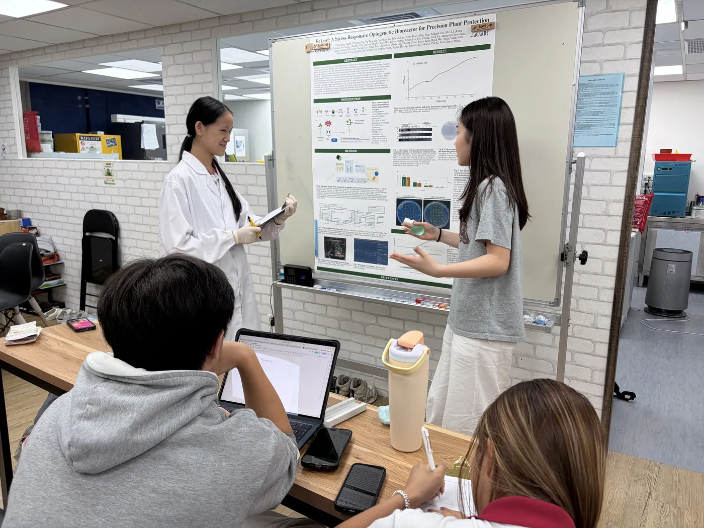
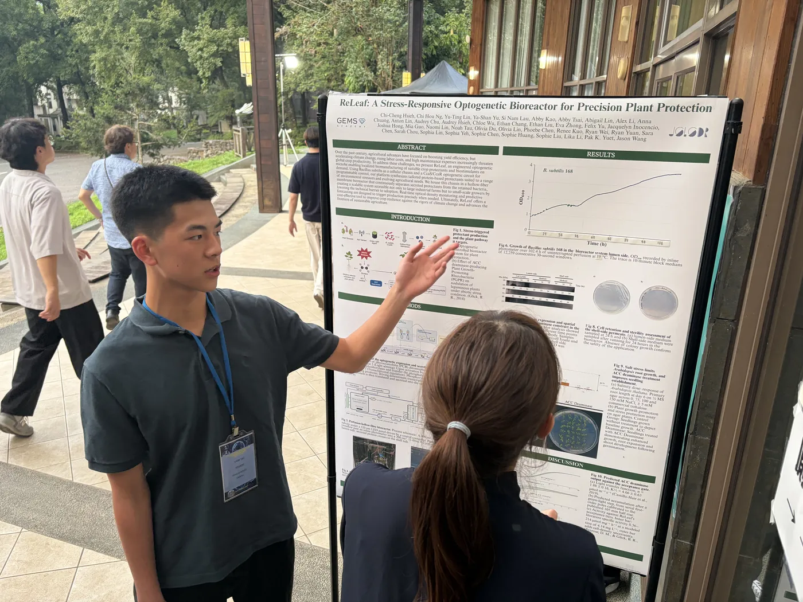
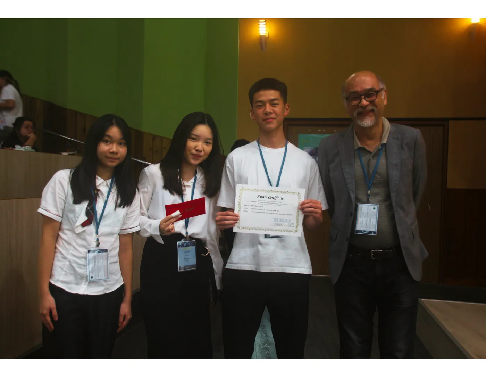
To finalize our protectant design and experimental validation strategy, we met with Dr. Elizabeth Sattely and Prof. Drew Endy. Our discussion centered on refining the evaluation of our protectants, distinguishing the secreted protectant from the producer organism, and validating biological mechanisms.
Dr. Sattely and Prof. Endy
12 SeptemberProtectant design
Dr. Drew Endy is currently an associate professor at Stanford University in the Department of Bioengineering, specializing in synthetic biology, DNA synthesis, and open-source genetic engineering standard tools, as well as being a co-founder of the iGEM competition.
Event summary
During our meeting with Dr. Sattely and Prof. Endy, our team gained very valuable insights. They mainly focused on how we present our experimental design, controls, mechanism, and the role of ACCD in our system, and suggested that we should keep the explanation clear. They also suggested that we should clearly distinguish between the engineered B. subtilis and the protectant being delivered to plants, demonstrate that the bacteria actually produce and secrete ACCD, and strengthen our experimental controls. Most importantly, they mentioned clearly communicating the purpose and results of each experiment is crucial.
Impact and adaptation
Their feedback shows us that clearly explaining what each result demonstrates and why each experimental choice was made is essential and important. We also need to provide appropriate controls to rule out alternative explanations and verify ACCD production at both the protein and RNA levels, and make our mechanism of action and biosafety rationale easier for judges and audiences to understand.
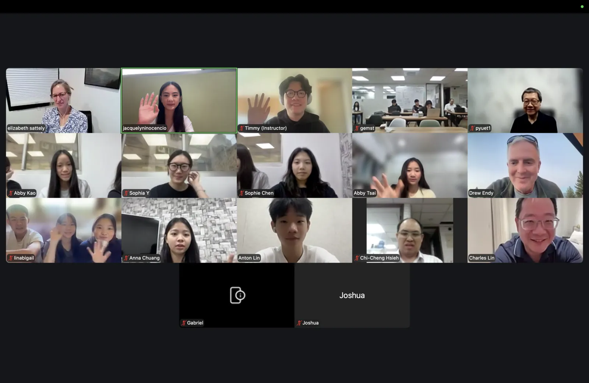
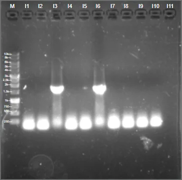
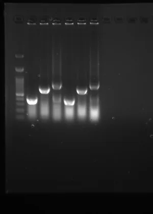
During the joint session, they emphasized the importance of demonstrating protectant production and secretion at both the protein and RNA levels. They advised implementing rigorous experimental controls to isolate the specific biological impact of ACCD on plant stress relief, ensuring that observed protective effects can be directly attributed to protectant activity rather than background systemic responses.
Gene circuit and cloning
The Genetic Circuit and Cloning pipeline was an important part of our project. It focused on designing, controlling, and testing our engineered Bacillus subtilis strain so it could reliably produce our target protectants. Each interview and meeting with each expert helped us spot technical challenges in the lab, adjust our dry-lab modeling, and refine our biosafety strategy. By talking with researchers in gene circuits, physical containment, and plant biology, we were able to turn our initial circuit concepts into a safe, well-tested biological system.
While working on the initial ideas of our bioreactor, we ran into a challenge. Because our project worked so closely together with the food people eat and the Earth and soil around us, biosafety and how we were able to prevent our Bacillus subtilis from leaking into the environment became a huge concern.
Dr. Jennifer Brophy
18 AprilProtectant designGene circuit and cloningBioreactor and hardware
Dr. Jennifer Brophy is currently an assistant professor at Stanford University in the Department of Bioengineering, specializing in synthetic biology, plant genetic engineering, and reprogrammable plant development.
Physical containment should be the primary safety mechanism rather than relying only on a kill switch
Event summary
Through this exchange, we received many valuable pieces of advice regarding circuit design for B. subtilis and hardware design. This meeting influenced the direction of our project by highlighting several potential problems of the kill-switch design.
Impact and adaptation
Dr. Brophy’s feedback provided an important shift in our biosafety and hardware design. Instead of relying on a biological kill switch to prevent environmental harm, we decided to begin treating physical containment as the primary safety mechanism.
Before
Design a kill switch to prevent B. sub leakage and cause pollution
Designed bioreactor v1
After
Treat physical containment as the primary biosafety mechanism, while evaluating whether an additional kill switch is necessary.
Design a semi-permeable membrane that retains bacteria while allowing the target protectants to diffuse through
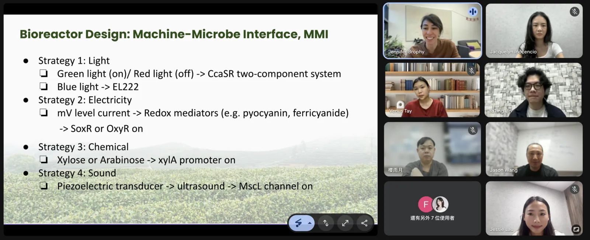
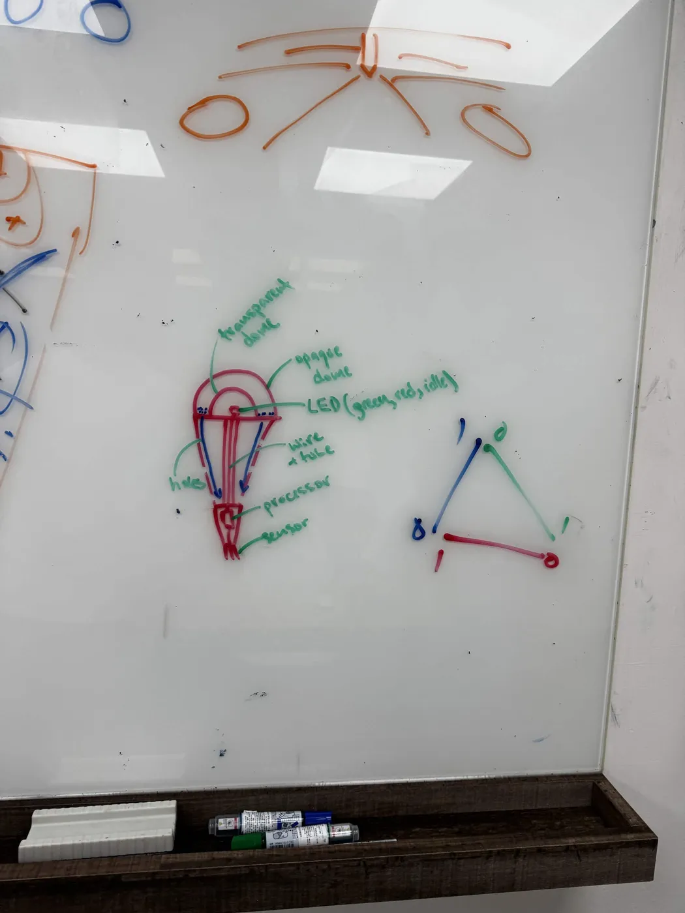
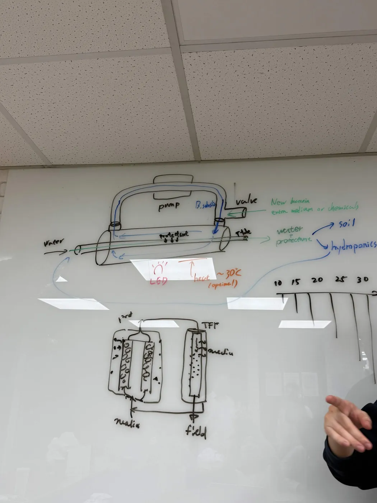
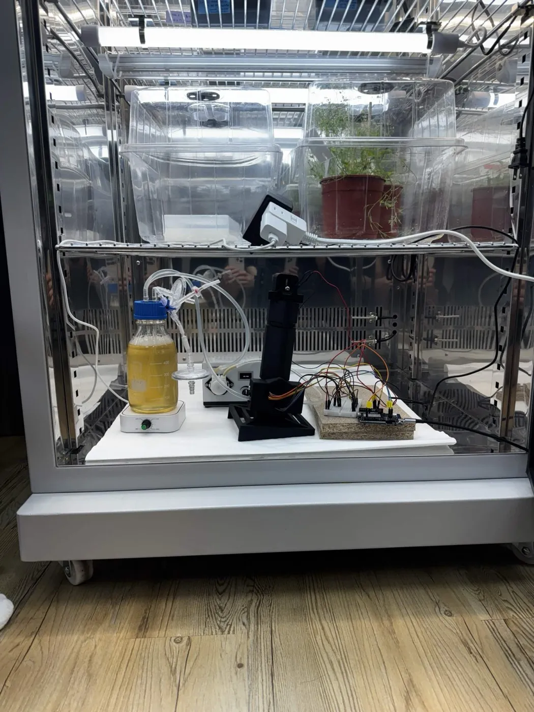
During our meeting, Dr. Brophy explained that relying only on a genetic kill switch can be risky because biological switches can mutate or fail. She recommended using physical containment as our main line of defense instead. Following her advice, we shifted our focus to physical containment and designed a semi-permeable membrane that keeps the B. subtilis safely inside while letting protectants diffuse out.
Next we met with Professor Huang Jie-Chen. With our physical containment plan set, our goal was to refine our circuit regulation logic, specifically around protectant release timing, safe dosage thresholds, and wet-lab cloning validation in B. subtilis.
Prof. Huang, Chieh-Chen 黃介辰
28 JulyPlant and stress biologyGene circuit and cloning
Professor Huang Jie-Chen is currently working in the Department of Life Sciences at the National Chung Hsing University. He specializes in Synthetic biology, Microbial carbon fixation development, Plant endophytes, Environmental biotechnology, Bioenergy technology, Microbiology.
Event summary
We consulted with Prof. Huang to evaluate the timing, dosage, sensing strategy, and application of our protectant-delivery system. During the discussion, he highlighted that biostimulants can be most effective when applied during the seedling stage to have effects that last longer, which also helps adjust gene regulation signals as cells replicate for long-term protection. Prof. Huang also mentioned that excessive stress or protectant concentrations may affect plant health negatively, so it is important to set appropriate thresholds and validate dosages. From an agricultural angle, hydroponic systems may not completely simulate field conditions, and farmers often prioritize simple application. Therefore, our system should integrate functions such as environmental sensing and weather forecasting to predict stress while keeping farmers able to operate it easily.
Impact and adaptation
This meeting changed our understanding of when and how our bioreactor should respond to stress. We also learned that different protectants may require different amounts of time, some can prime plants before stress, and others may be more effective when stress occurs. This led us to consider periodic rather than continuous operation and seedling-stage application as alternative strategies.
After
Combine sensors (pH value, moisture) with weather forecasting and AI to predict stress and release protectants early.
Set the bioreactor to clear free radicals periodically when stress hits, rather than running continuously.
Test application methods on soil (letting soil dry slightly so it absorbs better) and carefully test concentrations to prevent plant toxicity.
Use dense cell pellets and DNA (>10k) for electroporation, troubleshoot ligation, and verify the green reporter gene in B. sub.
Include both vector control and no-plasmid control groups to check for native resistance. Use an increasingly nutrient-poor medium as a backup method.
Professor Huang explained that running our genetic circuit continuously could lead to excessively high protectant concentrations that harm host cells. He recommended designing our circuit logic for periodic activation rather than continuous release to regulate expression levels. To execute this circuit design in the lab, we updated our cloning workflow by using dense cell pellets and DNA (>10k) for electroporation, troubleshooting ligations, verifying the green reporter gene in B. subtilis, and running dual controls (vector control + no-plasmid control) alongside nutrient-poor media selection to check for native antibiotic resistance. Despite these cloning adjustments, we still faced wet-lab issues with low protein expression yields, secretion efficiency, and construct design issues.
Prof. Huang, Chieh-Chen 黃介辰
6 AugustPlant and stress biologyGene circuit and cloning
Event summary
After the last meeting with Prof. Huang, we visited him at NCHU in person to gain some feedback on our project direction. For wetlab, the discussion focused on improving protein expression and secretion. For the plant model, he advised establishing a clear experimental rationale for salinity and heat stress across agar, hydroponic, and soil systems. For drylab, the focus shifted toward designing shorter or modified peptide constructs while retaining biological activity, and using receptor–peptide interactions to guide construct selection.
Impact and adaptation
The consultation helped us improve our understanding of protein and plant models. We recognized that only improving secretion is insufficient if the resulting protein does not retain its activity, so protein quantity, identity, solubility, and function need to be evaluated together.
During our last meeting, we met in-person with Professor Huang Jie-Chen to address our remaining genetic circuit and cloning challenges. Our discussion focused on strategies to improve protein expression and secretion efficiency in B. subtilis. shifted toward designing shorter or modified peptide constructs that retain their biological activity, using receptor-peptide interaction models to guide our construct selection. This meeting made us realize that boosting secretion alone is useless if the expressed protein loses its functional activity, leading us to establish a unified evaluation approach where protein quantity, identity, solubility, and functional activity are tested together.
Bioreactor and hardware
Our bioreactor and hardware serve as the physical interface between our engineered B. subtilis and the plant. Instead of releasing engineered bacteria directly into the environment, we designed a controlled system that can maintain the bacteria, produce protectants, and deliver them to the plant while minimizing bacterial leakage. Through expert consultations, we continuously refined the bioreactor to improve containment, production, monitoring, and practical deployment.
We first consulted Professor Chen, who advised us to move toward a bioreactor-based system with clear input output relationships instead of releasing engineered bacteria into the soil. This gave us the foundation for a controlled hardware system. However, this raised a new question: how could we prevent the engineered B. subtilis from escaping while still allowing the protectants to reach the plant?
Prof. Chen, Wen-Liang 陳文亮
10 AprilDeploymentGene circuit and cloningBioreactor and hardware
Our team met with Professor Chen Wen-Liang from the Department of Biological Science and Technology at National Yang Ming Chiao Tung University (NYCU). He is also the founder of AgriTalk, an AI-driven agricultural technology startup. His expertise in synthetic biology and smart farming helps us understand how biological solutions can be used in real-world applications.
Design the hardware as the printer and the biofertilizer as the ink
Event summary
In April, the meeting with Prof. Chen, also known as the founder of Agritalk, provided us with feedback that shaped the direction of both our hardware development and business plan, which allowed us to gain more understanding of the strategy for setting up a business plan and advised and suggested us on the hardware design.
Impact and adaptation
For the business plan strategy, he suggested that we should not only focus on the local market, but also expand it globally, as the limited scale of the local market may limit our potential revenue. He highlighted some challenges that we need to address, including farmers’ adoption, competition with chemical fertilizers, limited market, and regulations. For the hardware design, he advised us to define a clear input-output mapping and move toward a bioreactor-based system instead of soil release.
Before
Focused on Bacillus subtilis through the process of PGPR to detect plant stress and produce stress-priming protectants
After
Shifted toward a controlled bioreactor-based system that detects stress signals and activates B. subtilis to produce protectants.
Define clear input-output relationships and strengthen our dry-lab modeling and calibration strategy.
Conduct a competitive analysis to identify existing products and key competitors that are related to us
Treat physical containment as the primary biosafety mechanism
This led us to Dr. Jennifer Brophy, who challenged our original reliance on a kill switch and recommended making physical containment the primary safety mechanism. As a result, we began developing a semi-permeable membrane that could retain the bacteria while allowing the protectants to pass through.
Dr. Jennifer Brophy
18 AprilProtectant designGene circuit and cloningBioreactor and hardware
Dr. Jennifer Brophy is currently an assistant professor at Stanford University in the Department of Bioengineering, specializing in synthetic biology, plant genetic engineering, and reprogrammable plant development.
Physical containment should be the primary safety mechanism rather than relying only on a kill switch
Event summary
Through this exchange, we received many valuable pieces of advice regarding circuit design for B. subtilis and hardware design. This meeting influenced the direction of our project by highlighting several potential problems of the kill-switch design.
Impact and adaptation
Dr. Brophy’s feedback provided an important shift in our biosafety and hardware design. Instead of relying on a biological kill switch to prevent environmental harm, we decided to begin treating physical containment as the primary safety mechanism.
Before
Design a kill switch to prevent B. sub leakage and cause pollution
Designed bioreactor v1
After
Treat physical containment as the primary biosafety mechanism, while evaluating whether an additional kill switch is necessary.
Design a semi-permeable membrane that retains bacteria while allowing the target protectants to diffuse through
However, once we adopted membrane-based containment, we faced a new hardware problem: how could we make the hollow-fiber membrane system operate reliably? We therefore consulted Professor Chang, who helped us identify the importance of flow rate and transmembrane pressure for filtration and pointed out the potential issue of membrane caking. He also addressed another practical problem in the bioreactor–foaming.
Prof. Chang, Jo-Shu 張嘉修
18 JuneBioreactor and hardware
Professor Chang Jia-Xiu is from the Department of Chemical Engineering and Materials Engineering at Tunghai University and is also from the Department of Chemical Engineering at the National Cheng Kung University. His expertise in these areas helped us design and develop our hardware/bioreactor.
Event summary
In June, Prof. Chang visited our team and discussed our bioreactor design with us while also providing valuable insights for the B. subtilis challenges. The main problem we wanted to consult was the design of our hollow-fiber membrane bioreactor.
Impact and adaptation
From Prof. Chang’s experience, we gained a better understanding of B. sub, specifically the best growing conditions. He also mentioned a solution to the foaming issue by introducing a mechanical design that physically disrupts and breaks the bubbles. For the hollow fiber membrane, he noted that monitoring the flow rate and transmembrane pressure is essential for filtration, as it indicates the caking issue.
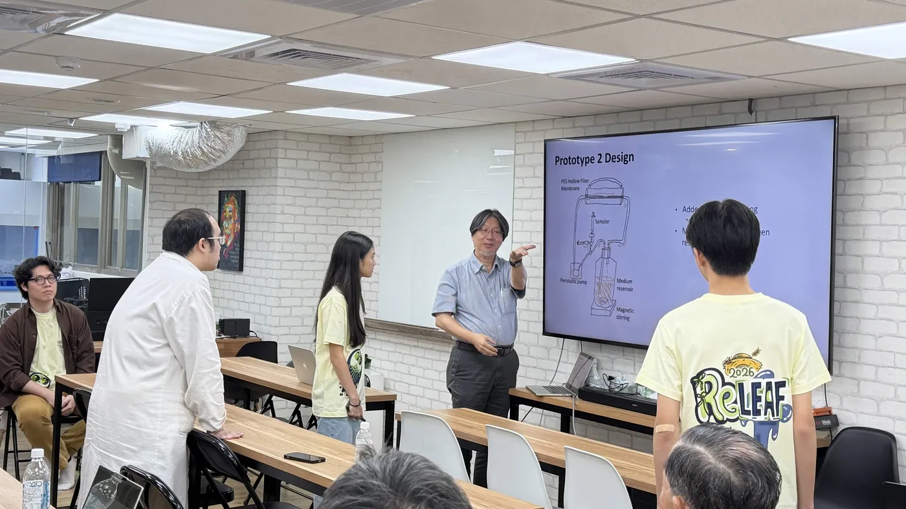
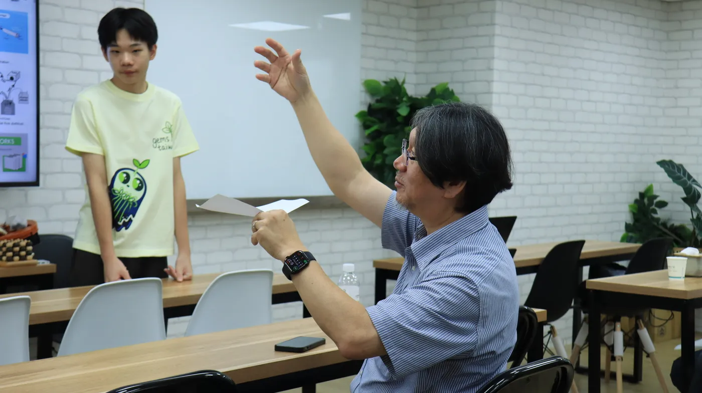
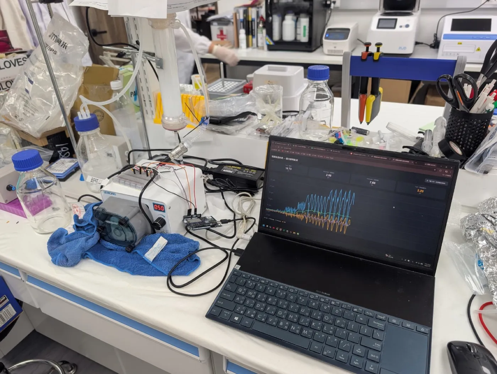
These hardware problems also showed us that simply building a functioning bioreactor was not enough. We needed to understand how the hardware, biological system, and mathematical model interacted. This brought us back to Professor Chen, who emphasized the need to connect experimental data with modeling and establish a feedback loop between our experiments and simulations. As a result, we expanded our testing and began considering parameters such as dissolved oxygen, treatment duration, dosage, and hydroponic conditions.
Prof. Chen, Wen-Liang 陳文亮
20 JuneDeploymentBioreactor and hardwareModelling
Event summary
During Prof. Chen’s visit, he provided feedback on different aspects, including the math model, plant model, protectant, hydroponics, gene circuit, and bioreactor. He highlighted the importance of connecting the experimental data with modeling, identifying the inputs and outputs clearly, and ensuring every model is refined through experimental validation and feedback loops.
Impact and adaptation
This meeting shows us that we need a better feedback loop for the experiment, hardware, and model, so we can ensure that our experimental results can continuously refine the model. He suggested that we should consider the ReLeaf database as a platform for organizing experimental data and supporting future optimization and agricultural applications. Additionally, Prof. Chen also mentioned that we can potentially visit Yes Health iFarm for gaining a better understanding on hydroponics.
Before
Using a self-producing bioreactor to release protein while preventing bacterial leakage
Developed the mathematical model and experimental system as relatively separate components
Planned to evaluate plant responses under a limited set of experimental conditions
Focused on whether the bioreactor could produce the target protectant
After
Establish a feedback loop between mathematical modeling and wet-lab experiments
Consider real-world agricultural applications, including biosafety, environmental factors, and practical deployment.
For the plant model, test different salt concentrations and treatment durations to determine the relationship between dosage, treatment time, and plant response
Expand the bioreactor testing period to collect sufficient data for model validation
Monitor dissolved oxygen and other hydroponic conditions to maintain stable plant growth during experiments
Explore real-world agricultural applications through a potential field visit to Yes Health iFarm, particularly to better understand hydroponic deployment
As we connected our hardware with our experimental system, we realized that we still needed to understand what the bioreactor would require outside of controlled laboratory conditions. This motivated us to engage with companies, researchers, and experts at BIO Asia-Taiwan. Their feedback highlighted that dissolved oxygen and active aeration were important not only for containment, but also for maintaining B. subtilis and achieving reliable protectant production. This led us to prioritize an O₂ sensor and feedback loop in our hardware.
BIO Asia-Taiwan Exhibition 2026
18 JulyDeploymentProtectant designBioreactor and hardware
Bio Asia-Taiwan Exhibition 2026 is a public biotechnology exhibition held in Nangang, Taipei, Taiwan. ReLeaf attended the event in order to explore novel biotechnology innovations and gain feedback on our product. Through this event, we gained insight on plant stress tolerance and the necessities for B. subtilis survival.
Event summary
In the BIO Asia-Taiwan Exhibition, we engaged with different companies, experts, and researchers, gaining many insights from different aspects. One of our most valuable takeaways is that plant stress tolerance depends not only on the presence of protective molecules, such as proline, but also on the processes that regulate their production and use. We also learned that dissolved oxygen monitoring and active aeration/stirring are essential for B. subtilis survival and protein/protectant output, not just passive containment.
Impact and adaptation
After hearing different advice from different booths, we realized that we should prioritize an O₂ sensor and feedback loop in our design. For wetlab, we can investigate irrigation-system-integrated delivery as an alternative to a standalone device and move at least some validation experiments from agar/hydroponics to soil-based trials, and increase sample size.
For business plans, we should also research the GMO regulatory landscape in Taiwan and other countries, including the Philippines, Malaysia, and EU.
Before
Self-producing where AI senses stress and triggers protective release.
On-site production avoids shelf life and transportation cost.
An electronic sensor senses abiotic or biotic stress, goes into the microcontroller, sets off the green life, and then protectant is produced.
Application method includes delivering the protectant to the soil through pipeline and spraying on the leaves through the irrigation system.
Farmers only need to buy the bioreactor machine and replace the B. Subtilis powder or liquid once a year.
Protectant candidates include ACCD, LEA14, and BoPep4.
After
Utilizing agricultural waste through methods such as hay infusion for the business plan.
BIO Asia-Taiwan also made us question whether our hardware could adapt to different agricultural environments and delivery systems. We therefore visited Yes Health iFarm to better understand how environmental conditions are monitored and controlled in an actual plant-growing system. Their hydroponic system showed us the importance of continuous circulation, aeration, environmental monitoring, and crop-specific conditions. This encouraged us to reconsider our experimental setup and make ReLeaf more adaptable to different crops and growing environments.
Yes Health iFarm 源鮮智慧農場
11 AugustDeploymentPlant and stress biologyBioreactor and hardware
Yes Health iFarm grow leafy vegetables, herbs, and microgreens indoors using stacked vertical hydroponic systems. So, based on their expertise, we received valuable insights on how a highly controlled hydroponic system manages plant growth.
Event summary
The visit to Yes Health iFarm helped us understand how a highly controlled hydroponic system manages plant growth through environmental monitoring, nutrient management, lighting, aeration, and water circulation. Although we were unable to obtain some of the exact technical data we needed, the discussion provided important design insights for ReLeaf.
Impact and adaptation
After consulting with the expert from Yes Health iFarm, we gained some valuable insights. The discussion led us to reconsider our experimental conditions, improve the integration of environmental sensors, and design ReLeaf to be adaptable to different crops and growing environments.
After
We may expand ReLeaf from simply detecting environmental stress to eventually detecting nutrient deficiencies and automatically supplying the nutrients plants need.
We also want to shift our project philosophy toward treating plants more like living organisms with individual needs, rather than focusing purely on maximizing economic output.
This could create a stronger connection between plant health, food quality, sustainability, and farmer needs.
Reconsider our current 8/16 light cycle and investigate whether a 12/12 cycle would produce more natural and reliable growth conditions.
Incorporate DO, and possibly OD into our system parameter planning.
Further investigate how sensor data can distinguish between different types of plant stress.
Modify our growth chamber to provide continuous circulation and gentle aeration rather than relying on pure oxygen.
Minimize plant transfers during experiments because transplantation itself can induce stress.
Consider plant-specific nutrient concentrations.
However, making the system more adaptable introduced another challenge: how could we make all of these components practical and reliable for actual users? This led us to consult Prof. Chang again in September. When we showed him our updated bioreactor, we encountered issues such as protectant and B. subtilis leakage through the hollow-fiber membrane and difficulties interpreting our experimental data. His feedback pushed us to consider not only technical performance, but also usability, AIoT integration, and a replaceable bacterial capsule.
Prof. Chang, Jo-Shu 張嘉修
4 SeptemberBioreactor and hardware
Event summary
During Prof. Chang’s second visit, we explained the new progress on our bioreactor to him and showed the progress from wetlab, along with some problems we’ve encountered such as protectant/B. sub leaking out from the hollow fiber membrane even without any driving force/action, and the difficulties we’re facing regarding interpreting the data from our recent experiments. Prof. Chang provided us with valuable advice on how to try our best to solve these issues, and also provided some ideas on how to further improve our project.
Impact and adaptation
The consultation helped us recognize that both the technical performance and usability of our system should be considered. Beyond improving membrane-based delivery and experimental reliability, we need to make the bioreactor easier for farmers to understand and operate. Integrating AIoT and a replaceable bacterial capsule could make the system more practical while strengthening its connection to real agricultural applications.
Our team met with Professor Chen Wen-Liang from the Department of Biological Science and Technology at National Yang Ming Chiao Tung University (NYCU). He is also the founder of AgriTalk, an AI-driven agricultural technology startup. His expertise in synthetic biology and smart farming helps us understand how biological solutions can be used in real-world applications.
Event summary
During Prof. Chen’s visit, he provided feedback on different aspects, including the math model, plant model, protectant, hydroponics, gene circuit, and bioreactor. He highlighted the importance of connecting the experimental data with modeling, identifying the inputs and outputs clearly, and ensuring every model is refined through experimental validation and feedback loops.
Impact and adaptation
This meeting shows us that we need a better feedback loop for the experiment, hardware, and model, so we can ensure that our experimental results can continuously refine the model. He suggested that we should consider the ReLeaf database as a platform for organizing experimental data and supporting future optimization and agricultural applications. Additionally, Prof. Chen also mentioned that we can potentially visit Yes Health iFarm for gaining a better understanding on hydroponics.
Before
Using a self-producing bioreactor to release protein while preventing bacterial leakage
Developed the mathematical model and experimental system as relatively separate components
Planned to evaluate plant responses under a limited set of experimental conditions
Focused on whether the bioreactor could produce the target protectant
After
Establish a feedback loop between mathematical modeling and wet-lab experiments
Consider real-world agricultural applications, including biosafety, environmental factors, and practical deployment.
For the plant model, test different salt concentrations and treatment durations to determine the relationship between dosage, treatment time, and plant response
Expand the bioreactor testing period to collect sufficient data for model validation
Monitor dissolved oxygen and other hydroponic conditions to maintain stable plant growth during experiments
Explore real-world agricultural applications through a potential field visit to Yes Health iFarm, particularly to better understand hydroponic deployment
Continuous engagement
In our Human Practice journey, while conducting interviews and meetings with the numerous stakeholders, we realized something important; that human practices is an ongoing dialogue that never ends, not just one time meetings. While early conversations helped us set our baseline ideas, our project only took real shape when we went back to our advisors with physical prototypes, fresh wet-lab data, and updated circuit designs.
By setting up continuous feedback loops with five core experts, we turned our project from a loose theoretical idea into a fully tested, physically contained agricultural system. Each follow-up meeting pushed us to fix design flaws, refine our controls, and make our system realistic for actual farmers.
MarAprMayJunJulAugSep
Prof. Cheng Mei-Chun 鄭梅君
Plant & Stress Biology
First meeting
Advice
During our initial consultation on March 27, 2026, Professor Cheng reviewed our proposed engineered Bacillus subtilis system and agreed with our focus on abiotic stresses like heat, salinity, and drought, as well as choosing Arabidopsis thaliana as a model organism. However, she pointed out that experimental procedures themselves can interfere with plant stress responses and warned that hydroponics alone might be unstable for testing. She suggested prioritizing growth on agar plates for early-stage control before carefully transferring plants to soil, and kindly provided us with Arabidopsis seeds along with valuable guidance on their cultivation and optimal growing conditions.
What we changed
Following her feedback, we shifted away from relying strictly on hydroponics, dropped osmotic stress to avoid confounding variables, adopted a plate-to-soil transition model, and incorporated visual ROS staining along with detectable phenotypic and biochemical outputs.
AprilMayJuneJulyAugust
Second meeting
What we brought back
We re-engaged with Professor Cheng on August 28, 2026, to share our updated Arabidopsis growth data and present our progress on the plate-to-soil transition model.
Advice
Building on our ongoing dialogue, her continued feedback reinforced the importance of carefully managing environmental shifts and stress timing so that experimental handling does not mask biological responses.
What we changed
This continuous interaction helped us further refine our plant cultivation protocols, minimize transplantation stress, and establish more controlled growth conditions to accurately assess stress protection.
Prof. Chen Wen-Liang 陳文亮
Gene Circuit & Cloning, Bioreactor & Hardware, Human Practices
First meeting
Advice
During our initial meeting on April 10, 2026, Professor Chen suggested that we treat our hardware design as a printer and the biofertilizer as the ink. He pointed out the challenges of open-soil release and advised us to pivot toward a controlled bioreactor system while also thinking about global market adoption and competition with chemical fertilizers.
What we changed
In response, we abandoned direct soil release and shifted our project focus toward designing a self-contained bioreactor that detects stress signals and releases target protectants.
MayJune
Second meeting
What we brought back
When we re-engaged with Professor Chen on June 20, 2026, we presented our updated bioreactor plans and preliminary mathematical model.
Advice
He evaluated our progress and noted that our dry-lab modeling and wet-lab experiments were operating separately instead of informing each other. He urged us to build a dynamic feedback loop where experimental data directly calibrates model parameters. Additionally, he suggested testing variable salt concentrations and treatment durations, monitoring dissolved oxygen, and visiting Yes Health iFarm to better understand industrial hydroponics.
What we changed
Following his advice, we connected our modeling directly to experimental feedback, added dissolved oxygen tracking to our system, and planned a field visit to study practical hydroponic deployment.
Prof. Chang Jia-Xiu 張嘉修
Bioreactor & Hardware
First meeting
Advice
During our initial consultation on June 18, 2026, Professor Chang visited our team to evaluate our hollow-fiber membrane bioreactor design and address cultivation challenges with Bacillus subtilis. He highlighted key technical solutions for managing bacterial growth, such as implementing a mechanical design to physically disrupt foam bubbles and monitoring flow rate alongside transmembrane pressure to catch membrane caking early.
What we changed
Based on his recommendations, we built pressure tracking protocols and physical foam-breaking mechanisms directly into our initial hardware specifications.
JulyAugustSeptember
Second meeting
What we brought back
On September 4, 2026, we met with Professor Chang for a second consultation to present the physical progress of our bioreactor, wet-lab expression data, and a major engineering obstacle: B. subtilis and protectants leaking through the hollow-fiber membrane even without an active driving force.
Advice
During this meeting, Professor Chang guided us through troubleshooting the pore dynamics and membrane integrity to resolve the passive leakage. Furthermore, he advised us to bridge the gap between technical functionality and user experience by pairing the bioreactor with AIoT features and designing a replaceable bacterial capsule.
What we changed
As a result of this follow-up loop, we adjusted our membrane parameters to prevent leakage and shifted our hardware architecture toward a modular, farmer-friendly capsule unit.
Dr. Elizabeth Sattely
Protectant Design
First meeting
Advice
During our initial consultation on June 27, 2026, Dr. Sattely evaluated our protectant selection, delivery strategy, and overall project direction. She pointed out that targeting multiple abiotic stresses simultaneously weakened our proof of concept. She emphasized that we should clearly define our project goals and milestones, focusing deeply on validating one target stress. Additionally, she suggested testing the purified protectant directly on plants before integrating it into the full bacterial system, while also encouraging us to explore alternative protective molecules such as peptides.
What we changed
Following her advice, we narrowed our focus to heat and salinity stress, prioritized direct plant assays using purified protectants, and set clear baseline metrics before expanding our biological construct.
JulyAugustSeptember
Second meeting
What we brought back
On September 12, 2026, we re-engaged with Dr. Sattely alongside Prof. Drew Endy to present our progress on purified protectant assays, plant testing data, and the mechanism of ACC deaminase (ACCD).
Advice
During this consultation, the discussion centered on tightening our experimental design and controls. They emphasized that we must clearly distinguish between the effects of engineered B. subtilis and the target protectant being delivered, while verifying ACCD production at both the RNA and protein levels.
What we changed
In response to this follow-up feedback, we expanded our experimental controls to isolate bacterial output from plant responses, added RNA and protein expression verification steps, and restructured our project narrative to clearly delineate our biological mechanism from the hardware delivery platform.
Farmer engagement
As we continued to develop our project, we recognized the importance of incorporating farmers’ perspectives into our development. Through interviews and farm visit, we gained valuable insights into their farming experience, challenges, and concerns. These insights then further reshaped our project and refined our direction to better address the farmers’ needs. Furthermore, based on the farmers’ feedback, we developed platforms that provide them with more accessible information and resources, enabling them to better understand and address the challenges they encounter in their farming practices.
Farmer interviews
From May to August, we conducted three outreach events, where we interviewed and engaged farmers using different questions designed for the focus of the event. Through these interactions, we gained new insights into farmers’ practices, experiences, challenges, and perspectives. The valuable takeaways gathered from each event gave us a better understanding of farmers’ needs and significantly influenced the development of our project.
16 May
Farmer Expo
On May 16, 2026, our team had the first outreach event at the Taipei Expo Farmers Market. To gain a deeper understanding of the challenges and difficulties faced by farmers, we interviewed many organic, smallholder farmers to learn about their farming experiences and needs. During the interview, we asked the farmers questions about the environmental stresses that affected their crops the most and how they think about using technology in farming, which allowed us to address their concerns.
After interviewing, we found out that biotic stresses were mentioned more than abiotic stresses. A farmer from Hualien noted, “Diseases and pests have led to a decrease in our crop yields.” This event significantly shaped our project direction by not only focusing on abiotic but also on biotic stresses in order to protect the plants more comprehensively. Another valuable takeaway from the farmers is that they are not against using technology in the field as long as it is affordable, accessible, and practical for their farms.
21 July
Tamsui Happy Farm
On July 21, 2026, Ms. Chen invited our team to visit her farm, Tamsui Happy Farm. Unlike traditional farmers, Ms. Chen is a natural farming practice farmer who believes we should not give additional support to crops when growing them to help them gain resilience. With Ms. Chen’s sharing, we learned about traditional and natural farmers’ perspectives on the application of technology in agriculture. During the visit, we also helped Ms. Chen with farming, and we also learned how the plants were affected by stress in different ways.
Sometimes, giving too much is not necessarily beneficial for a living organism; instead, it can take away its ability to survive and thrive on its own.
Through the discussion, we learned that farmers might have concerns about the effectiveness of the technology solutions because over-intervention may interfere with natural farming processes, which might unintentionally make it more difficult for these plants to survive in the future by stopping them from adapting to environmental challenges and developing resilience through their own responses. This suggestion then further affects our business plan on the amount of protectant that will be released in order to support the crops in a way that will not affect their ability to develop resilience.
During the interview, Ms. Chen also mentioned that after natural disasters, including typhoons and floods, the seeds of the crops might be lost or destroyed. Therefore, we designed a seed exchange platform that will allow us to track the owners of the seeds.
5 September
Water Garden Organic Farmers’ Market
On September 5, we organized a public forum event and booth activities at Water Garden Organic Farmers’ Market to engage both farmers and the public. On that day, we also engaged farmers from different cities to interview them to not only gain more feedback on our project but also collect more data for GIS.
Through the interview, we learned that organic certification and reducing labor are the main elements for farmers to consider transitioning towards more sustainable and commercial farming practices.
Lanyang River Friendly Farming Production Cooperative
Mr. Chen is a farmer and also the founder of Lanyang River Friendly Farming Production Cooperative, which sells agricultural products and processed foods without the use of pesticides, chemical fertilizers, or herbicides throughout the entire production process.
After the meeting, we gained a deeper understanding of the challenges the farmers face when adopting technologies similar to ours. One key insight was his concern that our bioreactor could potentially be damaged by natural disasters or wild animals, and that B. subtilis might be intentionally released into the environment. In response, we incorporated this potential risk into the threat analysis of our business plan and reconsidered our approach to biosafety accordingly.
Additionally, he emphasized that different crops have different needs and levels of capability to environmental stress. Some crops may benefit more from our bioreactor, while others may require little or no intervention, such as strawberries. Based on this feedback, he encouraged us to develop a more targeted marketing strategy focused on specific crop groups.
農友助手 LINE platform
Purpose
To improve farmers’ access to practical agricultural information, we developed a LINE platform 「農友助手」, designed to provide agricultural resources through a familiar and easy-to-use interface.
During our interactions at the Farmer Expo and Ms. Chen’s interview, we realized that although there is information all across the internet, including different websites, government pages, and social media, many smallholder farmers are still not familiar with technology, so they can’t assess the resources and find a solution to the problems they are facing efficiently and easily.
Since LINE is an app that is widely used in Taiwan, we established an official account to make our resources more accessible to users. By simply clicking the designated icon, users can be directly redirected to the corresponding website.
Platform design
The main menu of the LINE platform (農友助手) contains six functions: Latest News(最新消息), Product Introduction(產品介紹 ), Crop Stress Alerts(壓力警報), Crop Assistant(作物小幫手), Farmer’s Diary(農友日記 ), and Feedback(意見回饋 ). Together, these websites were designed to help farmers from receiving information and recognizing problems to finding solutions, recording observations, and providing feedback more easily.
Latest news 最新消息
The Latest News section provides users with news throughout the year, including farmer expos, farmer markets, and workshops. Information will also be posted on the website, including dates and locations.
Product introduction 產品介紹
The Product Introduction section introduces our bioreactor to users. By integrating the information into a brochure, users can easily understand its function and use with our slogan: “An on-site, on-demand bioreactor for smarter crop protection. Instead of explaining to users the biological and engineering mechanisms behind our project, we decided to design the website in a way that users can clearly understand at a glance.
This allows users to understand not only how our bioreactor solution works, but also how synthetic biology and agricultural technology could potentially be integrated into real farming systems.
Crop stress alert 壓力警報
From our interviews with the farmers, we noticed that many were triggered by environmental stress. The Crop Stress Alert section was designed into a dashboard with a weather forecast and biological risk system. The system can predict heat stress for the upcoming days and also suggest users to take action.
The website is divided into sections based on different regions of Taiwan, including Northern, Central, and Southern Taiwan, allowing users to easily assess heat stress conditions by selecting the region in which their farm is located. Each regional section contains individual blocks representing different cities. Within each block, the heat stress index is displayed on the left, while the biological risk index for crops is presented on the right.
The range of the index represents the severity of the heat stress and biological risk, with each numerical value corresponding to specific recommended actions for users.
Below the index, it will provide more information on the heat stress based on the Taiwan Central Weather Administration’s heat stress information [2]. Additional biological risk information will also be provided based on the information from the Taiwan Animal and Plant Health Inspection Agency (APHIA) [3].
Crop assistant 作物小幫手
Crop Assistant is a website designed to support farmers by suggesting appropriate actions based on their reported farming problems and weather conditions.
Users will be required to answer the questions and report their problem in three steps, including select or entering the type of crop that is being affected, select the region where their crops are being grown. They may also enter their specific location, identify the part of the crop currently affected by the issue, such as the leaves, roots, or flowers, and describe the current weather conditions, the symptoms of the crop, the duration of the issue, the impact on the farm, and the presence of any pests. By providing these information about their situation, the website will be able to deliver a more accurate suggestion.
After completing the questions, the website will explain the causes of the issue and analyze how each factor may affect the crop, providing users with a better understanding of the problem. It will also suggest some possible solutions and prevention to this issue. If users have additional questions after reviewing the analysis, a built-in AI system will be available to provide further explanations and answer their inquiries.
However, as our website is not intended to replace professional agricultural expertise, we recommend that users consult official government resources before taking any action. Relevant government websites and resources will be provided below for users to access easily.
Farmer diary 農友日記
To establish a platform that enables users to communicate, exchange experiences, and share information, we developed the Farmer Diary. The platform allows users not only to share posts about their farming experiences but also to ask questions and receive responses from other users.
Each account is limited to a maximum of five posts per day. Users can select the day’s weather conditions and upload photographs of their crops along with a description. Additionally, users can record the soil moisture and provide information about pest conditions of the day.
After each post, users will earn 10 tokens, which can be exchanged for rewards, such as LINE stickers, once they reach a certain number of tokens.
There will also be a dedicated question section where users can ask questions about their problems related to crops without any posting limit. All users will be able to view and respond to these questions.
Feedback 意見回饋
To gather user feedback and better understand their opinions of our LINE platform, we incorporated a Google Form to collect suggestions and areas for improvement. The survey includes questions regarding users’ satisfaction with the platform, its usefulness, and potential features or functions that could be incorporated in the future.
Seed exchange 種子交換平台
After our visit to Tamsui Happy Farm, Ms. Chen suggested we develop a platform that would allow users to exchange seeds with one another. Based on her suggestion, we developed the Seed Exchange Platform. The platform allows users to post seed demand and supply information, including specific variety details, harvest year, and planting location. The system then matches users based on their seed requirements and availability. Once both parties confirm the proposed exchange, they can contact each other directly to arrange the exchange.
Auto reply 自動回覆
To help users address their questions and concerns more efficiently, we integrated an AI chatbot into our LINE account. By entering keywords related to farming issues, such as salinity, heat stress, or pests, users can receive relevant information and suggestions for addressing these problems.
Sticker 貼圖
To further promote our project and engage the public, we developed a set of LINE stickers featuring illustrations of our bioreactor and protectants. By incorporating key elements of our project into illustrations, these stickers help connect our project with a broader audience.
Public engagement
On September 5, 2026, our team organized an event at Taipei Water Garden Organic Farmers’ Market. To engage both farmers and the public, we hosted a range of different interactive activities, including a public forum, booth activities, and a plant stress event. Through these activities, we raised awareness among participants of the environmental stresses affecting crops and introduced our project and its potential applications in addressing these challenges.
Public forum
During the morning, we organized a public forum “Field Dialogue: Agricultural Solutions to Climate Change” hosted by Green Media and invited experts, farmers, and the general public to gain a better understanding of farming practices, plant stress, and technology application on the farm. The event successfully engaged more than 50 participants, helping raise public awareness of the challenges faced by farmers and the impacts of environmental stress on agriculture.
During the meeting with Green Media in early July, we learned that stakeholders from different backgrounds may hold different perspectives on farming, and many farmers may face challenges that we had not anticipated. To provide participants with opportunities to share their research, experiences, and perspectives, we structured the forum to ensure that every participant’s voice could be heard. In this way, we can encourage meaningful exchange among the participants while allowing everyone to gain valuable insights from different perspectives.
Experts sharing
In the first section, we’ve invited experts to share their research and their experiences in farming with the other participants, including Prof. Chen, Dr. Li, and an expert from CH Biotech.
Dr. Li
Dr. Li emphasized that excessive technology intervention may address symptoms without solving their underlying causes, and compared it to the overuse of painkillers in medicine.
When a patient experiences a headache, most doctors may immediately prescribe painkillers to relieve the symptoms, while rarely examining the patient’s lifestyle or addressing the underlying problems causing the condition.
He used the example of Zambia to illustrate how external support and high-yield seeds can reduce farmers’ independence, while natural farming practices using locally adapted seeds and fewer external inputs may support more sustainable farming.
Prof. Chen
Prof. Chen highlighted that the purpose of smart agriculture is not simply to introduce technology into farming, but to combine IoT sensors and AI models to integrate farmers’ experience into data and provide early warning of potential risks.
CH Biotech
From an industry angle, the expert from CH Biotech shared that agricultural waste, such as feathers, can be used to produce signal peptides as biostimulants, which can help crops maintain energy metabolism under stresses, including typhoons and high temperatures, without increasing fertilizer or pesticide use.
Experts feedback
After the experts shared their research and experience, we received valuable feedback on our project and bioreactor design. Their insights helped us to further improve our design.
Dr. Li
Dr. Li encouraged us to rethink conventional agricultural practices from natural farming perspectives. He emphasized that rather than directly intervening in plants to improve their growth or resistance, creating an environment that allows plants to develop their own resilience to changing climatic conditions is important.
Prof. Chen
Prof. Chen introduced the engineering perspective of smart agriculture, focusing on how technology can be used to create a more favorable environment for plant growth. Prof. Chen also emphasized the importance of maintaining a balance between intervention and natural plant resilience and suggested that protective measures should be applied based on whether plants can continue growing under specific stress conditions. This perspective highlighted the importance of humane interactions with plants and the environment rather than excessive intervention.
CH Biotech
From CH Biotech, we learned the potential applications of bioprotectants in agriculture. The expert introduced us to a key concept: plant metabolism and homeostasis. He stated that rather than simply maximizing plant growth or continuously increasing protection, the goal should be to find a balance between growth and defense.
GEMS Taiwan project sharing
After the experts’ sharing, we introduced our project and our bioreactor solution to the participants, which also allowed us to further promote our project and create more impact. During this section, we explained how the bioreactor and the protectant work with an application explanation, allowing the farmers to become more familiar with technology application in the field.
Farmers’ feedback
At the end of the event, we arranged a section for the farmers to share their experience in farming and feedback based on what the experts and our team shared. In addition to sharing their experiences, farmers were also allowed to raise questions about challenges they face in farming, specifically those related to environmental stress. Through discussions and exchanges among participants, farmers could gain a better understanding of the causes and impacts of environmental stress on farming, while also learning from the perspectives and expertise of other participants.
More specifically, farmers raised two questions during the discussion session. The first concerned whether organic certification is required when using our bioreactor. The second concerned the amount of bioreactor needed for use on their farms.
Individual media coverage
Following the public forum, Green Media, the event host, published an article covering the event. The report not only increased the visibility of our project, but also shared insights and perspectives gathered from the forum, providing farmers and online audiences with accessible information on farming practices and potential solutions to address agricultural challenges.
After the public forum, our team truly gained valuable insights into different aspects through different speakers and farmers’ advice. To evaluate the impact of this event, we designed a Knowledge, Attitudes, and Practices (KAP) survey [1] for the speakers, farmers, and the general public who attended. Each group receives different questions based on their roles in this event.
Fig. 1Fig. 1. Speaker KAP survey results across all responsesFig. 2Fig. 2. Farmer KAP survey results across all responsesFig. 3Fig. 3. General public KAP survey results across all the responses
Fig. 1 presents the speaker’s Knowledge, Attitude, and Practice scores after the forum. The speaker responded with a very positive answer, with 100% agreeing to each question, including trying to understand more about farmers’ needs, recognizing the importance of incorporating farmers’ practical needs into research and technology development, and willingness to consider these needs in future work.
In Fig. 2, we analyzed the farmers’ KAP survey results. Across the three questions, the average percentage achieved was 80%, indicating positive feedback toward the forum and agricultural technology, and that strong understanding of agricultural challenges and farmers’ needs, recognition of the importance of practical considerations in agricultural technology, and willingness to consider the use of related technologies in their farming practices were gained after the forum.
Fig. 3 presents the KAP scores reported by the general public following the forum. The knowledge question received a 90% score, the attitude question received a 95% score, and the practice question received a 100% score, which reveals a positive influence after the forum. The results indicate that the general public’s understanding of the challenges current agriculture is facing, recognition of the importance of supporting local smallholder farmers, and willingness to support local smallholder farmers and their agricultural products were all increased.
Overall impact
From the public forum survey, the results reveal that the audience, including the speaker. farmers, and the general public, all responded with positive feedback, showing that the forum successfully increased awareness, positive attitudes, and willingness to support or engage with agricultural development in different ways.
Booth activities
To better engage with the public, we arranged some booth activities to not only raise awareness but also promote our project. In this event, we had six booths with different interactive activities that introduced the public to the effects of stress and our bioreactor solution.
To keep visitors engaged and excited to explore everything we had to offer, we introduced an interactive stamp card system. Participants collected a stamp at each booth after completing the activity and answering a few brief questions set by our team. Once they gathered all six stamps and filled out an anonymous feedback survey, they unlocked a small prize of team merch and earned their spot to participate in our popular DIY arts & crafts activity.
Coffee infographic
Because this event was in collaboration with Green Media, who happened to be hosting a “Taiwanese Coffee & Cocoa Bean” event, we also decided to take part in this. We created an infographic highlighting the importance of supporting local Taiwanese cocoa farming and explaining how climate change impacts cocoa production. Since coffee and cocoa share similar agricultural challenges, we showed how changing weather patterns affect these crops and why that matters to everyday consumers who rely on them.
ReLeaf project introduction
Additionally, this event served as an ideal platform to promote ReLeaf and engage the public with the core principles of our synthetic biology project. Our team presented visual posters and communicated complex concepts in clear, accessible terms. To make the science more tangible, we showcased photos tracking the growth progress of our Arabidopsis plants and displayed a prototype of our bioreactor, enabling visitors to visualize the physical outcome and practical application of our design.
Data physicalization
In our data physicalization station, we wanted a way to turn abstract data on screens and paper into an experience that allowed people to understand the data through interactive maps and activities. We had two main parts to this booth. First, we set up an activity focused on plant stress, where we played real recordings of plants under drought stress. In this experience visitors were actually able to feel the impact of plant stress firsthand, bringing the concept to life beyond dry scientific data. Second, we created an interactive map that showed the relationship between heat stress and rice crop yields, letting visitors see how rising temperatures directly impact food production, through LED lights and color coded regions.
Ring toss
For our ring toss booth, we wanted to help people understand the difference between biotic and abiotic stress, as well as why different protectants are needed for different types of stress. We turned this concept into an interactive ring toss game where bottles were labeled with various plant stressors, and color-coded rings represented different protectants. Participants had to match the correct ring to the corresponding stressor, making learning about plant protection fun and easy to grasp.
Online game
To really help enforce concepts of protectants and different environmental stress, we also developed our own interactive online game. As different environmental stressors rained down on the virtual plants, players had to quickly identify the threat and shoot the matching protectant to defend their crop. This fast-paced mechanic made learning how specific protectants counter targeted stressors both engaging and memorable.
DIY arts and crafts
In correspondence with our theme of relieving stress, we set up a craft station where visitors could build their own fidget keyboard clicker toys. We also provided handmade, team-themed stickers featuring our project mascot so participants could decorate their clickers, giving them a fun, hands-on way to create their own personalized stress-relief tool to take home.
Survey analysis
To gauge how effective and impactful our afternoon booth activities/games were to the public, we designed a survey based on the Knowledge-Attitude-Practice (KAP) structure. Using this format, we asked questions ranging from how well they retained knowledge from certain booth explanations, to what they were willing to do in the future after learning about current climate events and our project details. Through this survey, we hope to capture a definitive reflection of our project’s ultimate impact, measuring how effectively our final event transformed public awareness into actionable, everyday commitments. By evaluating participant responses across all three KAP dimensions, this closing dataset will allow us to measure the lasting educational value of our booth activities and evaluate how successfully our collective outreach efforts inspired meaningful changes and allowed for even more light to be shone on this global topic.
Knowledge
Fig. 4Fig. 4. Identification of highest plant stress region (total responses: 62)Fig. 5Fig. 5. Level of understanding of various booth-related topics (total responses: 62)
Key takeaways and standout impressions from the booth. Visitors were asked to share one thing they learned and/or one thing they found most impressive during their visit. Their responses highlighted five major themes listed below:
Plant Stress & Sound Phenomena. Learning that plants experience stress (from heat, drought, pests, or salt) and were particularly fascinated to discover that plants emit sounds when under stress (e.g., “clicking” noises when lacking water).
Innovations in Plant Protection (ReLeaf). Impressed by how the ReLeaf system monitors crops, uses beneficial bacteria to create safe biological protectants, and delivers automated solutions without harming the soil.
Local Coffee Agriculture & Climate Change. Gained awareness of Taiwanese coffee production (e.g., Yunlin and Yilan) and how climate change and global warming directly impact local crops.
Educational & Interactive Engagement. Appreciated learning practical agricultural concepts through fun, hands-on activities like the ring toss game and online crop defense games.
Positive Energy of the Team. Praised the student presenters at each station for their enthusiasm, professional knowledge, and clear explanations to the public.
Our survey results from 62 respondents demonstrate that our interactive booth effectively communicated complex scientific concepts to the general public. As shown in Figure 4, when asked to identify the region facing the highest plant stress, a majority of participants (51.6%) correctly selected Yilan, showing strong factual retention from our regional agricultural displays.
Furthermore, as illustrated in Figure 5, across all three core educational domains evaluated, a significant majority of respondents reported a high level of understanding after engaging with our booth:
Climate Change Impact on Agriculture. 62.9% achieved high understanding, while 33.9% reported moderate understanding (see Figure 5).
Biotic vs. Abiotic Plant Stress. 66.1% reached high understanding, with 29.0% reporting moderate understanding (see Figure 5).
ReLeaf Device & Plant Protectant Mechanics. 69.4% expressed high understanding, with 27.4% reporting moderate understanding (see Figure 5).
With less than 5% of respondents reporting low or no understanding across any category in Figure 5, these metrics confirm that our hands-on games, interactive simulations, and station presentations successfully broke down advanced synthetic biology and agricultural stress concepts into clear, accessible knowledge
Attitude
Fig. 6Fig. 6. Changes in visitor attitude and perception (total responses: 62)
Our survey data evaluated how visiting the booth shifted public perceptions regarding climate change, agricultural technology, and overall event satisfaction. As detailed in Figure 6, participant responses demonstrate an overwhelmingly positive reaction across all surveyed categories:
Overall Event Satisfaction. A combined 98.4% of respondents expressed satisfaction with our activities, games, and map, with 79.0% rating themselves as “Very Satisfied” (see Figure 6).
Importance of Tech/Biotech in Crop Resilience. 66.1% viewed biotechnology solutions as “Highly Important,” and an additional 32.3% deemed them “Important,” totaling 98.4% positive sentiment toward biotech application in crop protection (see Figure 6).
Helpfulness of Data Physicalization Map. 58.1% of visitors found our interactive map “Highly Helpful,” while 37.1% found it “Helpful” in understanding agricultural stress regions (see Figure 6).
Increased Attention to Climate Impact on Taiwan Agriculture. A combined 98.4% of participants reported increased awareness regarding climate challenges in Taiwan, with 51.6% strongly agreeing and 46.8% agreeing (see Figure 6).
Event Inspiration Level. 79.1% of respondents reported feeling inspired by our cross-domain AgTech focus, with 45.2% selecting “Highly Inspired” and 33.9% selecting “Partially Inspired” (see Figure 6).
With negative feedback (“Disagree / Not Important”) remaining at or below 1.6% across nearly all metrics in Figure 6, these results confirm that our booth successfully fostered trust in synthetic biology and raised public awareness for agricultural resilience.
Practice
Fig. 7Fig. 7. Changes in visitor future practices and actions (total responses: 62)
To evaluate the long-term, actionable impact of our outreach event, we surveyed respondents on their willingness to pass on the knowledge gained at our booth to their personal networks. As shown in Figure 7, the vast majority of participants demonstrated a strong commitment to active knowledge sharing:
Willingness to Share Knowledge with Family & Friends. A total of 96.8% of respondents indicated they intended to discuss ReLeaf and agricultural stress concepts with others, with 64.5% stating they were “Very Willing to Share” and 32.3% reporting they were “Willing to Share” (see Figure 7).
Uncertain or Unwilling Respondents. Only 1.6% noted that their decision “Depends on the Situation,” and a minimal 1.6% selected “Would Not Share” (see Figure 7).
By inspiring nearly 97% of visitors to become active advocates for sustainable agriculture and synthetic biology, these findings confirm that our booth succeeded in translating immediate engagement into lasting community outreach.
Overall impact of the booth activities
Our booth event at the Taipei Water Garden Organic Farmers’ Market gave us a great chance to connect our lab work with the general public. Through our six interactive stations, covering coffee farming, plant stress maps, drought sound recordings, ring toss games, an online defense game, and DIY crafts, we were able to explain synthetic biology in a way that felt approachable and easy to understand.
The feedback we collected showed that people really connected with the activities. Over 90% of visitors said they left with a better understanding of plant stress and how ReLeaf works, and more than half remembered specific details like Yilan being a high-stress farming area. Almost everyone had a positive experience at the booth, and 96.8% said they planned to share what they learned with friends and family.
More importantly, talking to visitors gave us real insights that helped refine our project. People were fascinated by the drought sound recordings, which confirmed that using natural plant signals was a great way to explain our biosensors. On the other hand, their questions about soil safety reminded us how important it is to be transparent about our non-harmful, biocontained design. These conversations helped ensure that ReLeaf stays focused on safety, real-world usefulness, and community trust.
Plant stress event
For the purpose of spreading more awareness about plant stress in our daily lives, we decided to promote our plant stress event on Instagram for greater exposure. To participate in this event, participants have to upload a photo of a plant in stress they see daily and are free to express the reason why they chose this photo.
Conclusion
Integration of Human Practices
Human Practices was embedded into ReLeaf from day one, serving as a continuous feedback loop that helped us understand how to improve our project further. Across seven months from March to September, every stakeholder’s insights directly impacted and led to changes in research direction, plant focuses, and hardware designs, ensuring that our technical development was constantly shaped by real-world needs.
Implementing Our Human Practices
Our outreach was also carefully planned around specific knowledge gaps and technical challenges we have identified as time went on. We provided clear context for each stage of ReLeaf by examining existing agricultural methods, prior work, and current biotechnology limitations, helping our team understand the current global reality and where our solution could step in to relieve these issues. Every expert interview and field visit had a defined purpose, where members of the team conducted deep research regarding current roadblocks we were facing and the person that would be able to help the most with our problems. This helped with ensuring our team approached stakeholders with well-researched questions and implemented their feedback with clear rationale, making each visit targeted and with a clear goal set in mind.
Responsible Innovation
Throughout our project, the question of how we could design a solution that was safe and helpful remained in our minds. To achieve this we engaged in interviews and meetings with several experts such as farmers, biosafety experts, and plant biologists. All these helped ensure that ReLeaf was designed with safety, ethics, and environmental consideration at its core. By consulting specialists in deployment and gene circuit safety, we prioritized biocontainment and responsible release mechanisms, ensuring our solution actively protects crops under climate stress without introducing ecological risks. Furthermore, we have also been in contact with farmers, the primary customer of our project, to ask for their opinions and concerns to make sure the problem we are trying to solve is actually an issue that farmers face.
Stakeholder Engagement
Together, we gathered perspectives across a broad spectrum of 20 stakeholders across six distinct domains: deployment, plant and stress biology, protectant design, gene circuit and cloning, bioreactor and hardware, and mathematical modeling. Combining these technical insights with the lived experiences of local farmers and public feedback allowed us to balance high-level scientific rigor with practical usability in the field.
Documentation & Continuity
In previous pages, we have also mapped out our entire Human Practices journey on this page, including our Project Evolution Map, pipeline breakdowns, stakeholder interview summaries, and the specific design changes triggered by each interaction. Our Integrated Human Practice page records and mapped out every single one of our interactions and the specific steps we have taken afterwards. By transparently detailing our successes, challenges, and methodology, we provide an accessible, step-by-step roadmap that clearly showcases the journey we have been through as a team.
Broader Impact
Lastly, ReLeaf demonstrates how synthetic biology can move beyond abstract lab research to tackle urgent global challenges like climate change and food security. By showing how open dialogue with communities and experts can transform a student project into a practical, human-centered solution, we hope to inspire future researchers to build science hand-in-hand with the people it is meant to help.
References
World Health Organization (2008). Advocacy, communication and social mobilization for TB control: a guide to developing knowledge, attitude and practice surveys. WHO/HTM/STB/2008.46.
Central Weather Administration, Taiwan. Heat stress information (熱傷害資訊). www.cwa.gov.tw
Animal and Plant Health Inspection Agency, Ministry of Agriculture, Taiwan. www.aphia.gov.tw